B1_flowkit · Opus 5.5 · attempt UhoCcoD
Batch fk1 · job fk1_B_base_conditioned_media_flowkit_claude-opus-5-5 · trial B_base_conditioned_media_flowkit__UhoCcoD. Long tool outputs are cut at 6,000 characters.
Score
0.37
0.37
Minutes
15.2
15.2
Agent cost
$3.25
$3.25
Steps
169
169
Screenshots / images
15
15
2
tool call · Bash
cat /task/inputs/plan.md; echo; cat /task/inputs/plate_layout.csv; ls /task/inputs/raw | head; ls /task/outputs
3
tool output
# Plan: Caspase activity assay development with progranulin conditioned media (H4 cells) Source: lab notebook entry (target PGRN; assay development; cell-based; flow; cell type H4). This plan covers the plate acquired on 16-Dec-2022. People's names, and all text written after acquisition, have been removed. ## Purpose To determine if progranulin conditioned media can restore wild-type levels of caspase activity in H4 GRN KO cells. ## Rationale Previous literature evidence suggests that applying exogenous progranulin to cells can restore molecular phenotypes in progranulin deficient lines. Our previous experiment with caspase activity on H4 GRN WT and KO cells showed that GRN KO lines had increased caspase activity. This difference was enhanced after campothesin challenge in both GRN WT and KO cells. In this experiment, we will determine if applying conditioned media from WT cell lines onto KO lines can reduce caspase activity closer to WT levels. ## Materials - H4 WT cells - H4 PGRN KO E1 - H4 PGRN KO E3 - H4 media (DMEM + 10% FBS) - CellEvent Caspase-3/7 Green Flow Cytometry Assay Kit - SYTOX AAdvanced Dead Cell Stain - Camptothecin ## Protocol ### 2022-12-12: conditioned-media donor plate - Passage WT H4 cells into 96 well plate (10K/well). This plate is the one the media is collected from. Donor plate map, as written (12 columns per line): ``` WT WT WT WT WT WT WT WT WT WT WT WT WT WT WT WT WT WT WT WT WT WT WT WT WT WT WT WT WT WT WT WT WT WT WT WT 24hr WT WT WT WT WT WT WT WT WT WT WT WT WT WT WT WT WT WT WT WT WT WT WT WT WT WT WT WT WT WT WT WT WT WT WT WT 48hr ``` Red = 24 hr media collection; Purple = 48hr media collection. Cell colours of this map were not preserved in the export. ### 2022-12-13 2. Collect media from 24hr wells 3. Spin down at 2000xg for 10min @4C and collect into fresh plate ### 2022-12-14 4. Collect media from 48hr wells 5. Spin down at 2000xg for 10min. Collect into fresh plate - Passage all H4 lines into 96 well plate for assay (10K/well) according to the assay plate map below. ### Assay plate map The map is as written. Row letters A–H and column numbers 1–12 have been added for orientation. | | 1 | 2 | 3 | 4 | 5 | 6 | 7 | 8 | 9 | 10 | 11 | 12 | |---|---|---|---|---|---|---|---|---|---|---|---|---| | A | WT 10uM | WT 5uM | WT 2uM | WT DMSO | WT 10uM | WT 5uM | WT 2uM | WT DMSO | WT 10uM | WT 5uM | WT 2uM | WT DMSO | | B | E1 10uM | E1 5uM | E1 2uM | E1 DMSO | E1 10uM | E1 5uM | E1 2uM | E1 DMSO | E1 10uM | E1 5uM | E1 2uM | E1 DMSO | | C | E3 10uM | E3 5uM | E3 2uM | E3 DMSO | E3 10uM | E3 5uM | E3 2uM | E3 DMSO | E3 10uM | E3 5uM | E3 2uM | E3 DMSO | | D | WT 10uM | WT 5uM | WT 2uM | WT DMSO | WT 10uM | WT 5uM | WT 2uM | WT DMSO | WT 10uM | WT 5uM | WT 2uM | WT DMSO | | E | E1 10uM | E1 5uM | E1 2uM | E1 DMSO | E1 10uM | E1 5uM | E1 2uM | E1 DMSO | E1 10uM | E1 5uM | E1 2uM | E1 DMSO | | F | E3 10uM | E3 5uM | E3 2uM | E3 DMSO | E3 10uM | E3 5uM | E3 2uM | E3 DMSO | E3 10uM | E3 5uM | E3 2uM | E3 DMSO | | G | WT no treatment (no stain) | WT L/D only | WT Caspase only | E1 untreated | E3 untreated | WT untreated | | | | | | | | H | 24hr conditioned media | | | | 48hr conditoned media | | | | No condtioned media | | | | Cell colours in the notebook: - Rows A–F, columns 1–4: blue (#94B5DD). - Rows A–F, columns 5–8: green (#D5F0AD). - Rows A–F, columns 9–12: uncoloured. - Row G: uncoloured. - Row H: "24hr conditioned media" is blue; "48hr conditoned media" is green; "No condtioned media" is uncoloured. ### 2022-12-15 6. Rinse wells with DMEM and then add conditioned media ### 2022-12-16 7. Add camptothecin to wells at indicated dose. Incubate for 4.5hr 8. Run flow ### Staining and acquisition (assay protocol as written in this entry) - Aspirate media and wash with PBS - Add 150uL trypsin incubate for 5min - Add 75uL FBS and collect into 96w round bottom plate - spin down 200xg for 5min - Add 200uL of Cell Event Caspase 3/7 Detection reagent (1:1000) in flow staining buffer. Incubate for 30min at 37C - Prepare SYTOX AAdvanced Dead Cell Stain at 100uM concentration by adding 1000uL DMSO to stain. Mix well - During the final 5 minutes of 30min Caspase incubation add 2uL of the 100uM Dead Cell stain (final concentration of 1uM) - Analyze the samples without fixing. Flow cytometer settings: FSC-20; SSC-290; BL1 (caspase)-225, BL2 (AAddvanced Dead Cell Stain)-350 ## Acquisition - Instrument: Thermo Attune NxT. - Date: 16-Dec-2022. - Files: 78 FCS files, one per well (A1–F12 and G1–G6). file,well,sample,cell_line,camptothecin,conditioned_media Caspase-assay-2-mlk(1)_caspase_Group_A1.fcs,A1,WT 10uM,WT,10uM,24hr conditioned media Caspase-assay-2-mlk(1)_caspase_Group_A2.fcs,A2,WT 5uM,WT,5uM,24hr conditioned media Caspase-assay-2-mlk(1)_caspase_Group_A3.fcs,A3,WT 2uM,WT,2uM,24hr conditioned media Caspase-assay-2-mlk(1)_caspase_Group_A4.fcs,A4,WT DMSO,WT,DMSO,24hr conditioned media Caspase-assay-2-mlk(1)_caspase_Group_A5.fcs,A5,WT 10uM,WT,10uM,48hr conditioned media Caspase-assay-2-mlk(1)_caspase_Group_A6.fcs,A6,WT 5uM,WT,5uM,48hr conditioned media Caspase-assay-2-mlk(1)_caspase_Group_A7.fcs,A7,WT 2uM,WT,2uM,48hr conditioned media Caspase-assay-2-mlk(1)_caspase_Group_A8.fcs,A8,WT DMSO,WT,DMSO,48hr conditioned media Caspase-assay-2-mlk(1)_caspase_Group_A9.fcs,A9,WT 10uM,WT,10uM,No conditioned media Caspase-assay-2-mlk(1)_caspase_Group_A10.fcs,A10,WT 5uM,WT,5uM,No conditioned media Caspase-assay-2-mlk(1)_caspase_Group_A11.fcs,A11,WT 2uM,WT,2uM,No conditioned media Caspase-assay-2-mlk(1)_caspase_Group_A12.fcs,A12,WT DMSO,WT,DMSO,No conditioned media Caspase-assay-2-mlk(1)_caspase_Group_B1.fcs,B1,E1 10uM,E1,10uM,24hr conditioned media Caspase-assay-2-mlk(1)_caspase_Group_B2.fcs,B2,E1 5uM,E1,5uM,24hr conditioned media Caspase-assay-2-mlk(1)_caspase_Group_B3.fcs,B3,E1 2uM,E1,2uM,24hr conditioned media Caspase-assay-2-mlk(1)_caspase_Group_B4.fcs,B4,E1 DMSO,E1,DMSO,24hr conditioned media Caspase … [5,710 more characters not shown]
4
tool call · Bash
ls /root/.claude/projects/-task/memory/ 2>/dev/null && cat /root/.claude/projects/-task/memory/MEMORY.md 2>/dev/null
5
tool output (error)
Exit code 1
7
tool call · Bash
python -c "
import flowkit as fk, glob
s=fk.Sample(glob.glob('inputs/raw/*A1.fcs')[0])
m=s.get_metadata()
for k,v in m.items():
if len(str(v))<300: print(k,'=',v)
else: print(k,'= <len',len(str(v)),'>', str(v)[:300])
print(s.channels)
print(s.event_count)
"8
tool output
par = 13
tot = 30920
mode = L
datatype = F
byteord = 1,2,3,4
p1f = NA
p1l = NA
p1s = Time
p1v = NA
p1n = Time
p1b = 32
p1r = 67108864
p1e = 0,0
p2f = NA
p2l = 488
p2s = FSC-A
p2v = 20
p2n = FSC-A
p2b = 32
p2r = 1048576
p2e = 0,0
p3f = NA
p3l = 488
p3s = SSC-A
p3v = 290
p3n = SSC-A
p3b = 32
p3r = 1048576
p3e = 0,0
p4f = NA
p4l = 488
p4s = AAV-GFP-GFP-A
p4v = 225
p4n = BL1-A
p4b = 32
p4r = 1048576
p4e = 0,0
p5f = NA
p5l = 488
p5s = AAdvanced livedead-A
p5v = 350
p5n = BL2-A
p5b = 32
p5r = 1048576
p5e = 0,0
p6f = NA
p6l = 488
p6s = FSC-H
p6v = 20
p6n = FSC-H
p6b = 32
p6r = 1048576
p6e = 0,0
p7f = NA
p7l = 488
p7s = SSC-H
p7v = 290
p7n = SSC-H
p7b = 32
p7r = 1048576
p7e = 0,0
p8f = NA
p8l = 488
p8s = AAV-GFP-GFP-H
p8v = 225
p8n = BL1-H
p8b = 32
p8r = 1048576
p8e = 0,0
p9f = NA
p9l = 488
p9s = AAdvanced livedead-H
p9v = 350
p9n = BL2-H
p9b = 32
p9r = 1048576
p9e = 0,0
p10f = NA
p10l = 488
p10s = FSC-W
p10v = 20
p10n = FSC-W
p10b = 32
p10r = 1024
p10e = 0,0
p11f = NA
p11l = 488
p11s = SSC-W
p11v = 290
p11n = SSC-W
p11b = 32
p11r = 1024
p11e = 0,0
p12f = NA
p12l = 488
p12s = AAV-GFP-GFP-W
p12v = 225
p12n = BL1-W
p12b = 32
p12r = 1024
p12e = 0,0
p13f = NA
p13l = 488
p13s = AAdvanced livedead-W
p13v = 350
p13n = BL2-W
p13b = 32
p13r = 1024
p13e = 0,0
cyt = 0A29009 Attune NxT Acoustic Focusing Cytometer (Lasers: BRV6Y)
sys = SEA11065ATTUNE Microsoft Windows 10 Enterprise LTSC
spillover = <len 361 > 6,BL1-A,BL2-A,BL1-H,BL2-H,BL1-W,BL2-W,1.000000,0.000000,0.000000,0.000000,0.000000,0.000000,0.000000,1.000000,0.000000,0.000000,0.000000,0.000000,0.000000,0.000000,1.000000,0.000000,0.000000,0.000000,0.000000,0.000000,0.000000,1.000000,0.000000,0.000000,0.000000,0.000000,0.000000,0.000000,1.000000,0
btim = 14:27:29
cells = NA
com = NA
cytsn = 2AFC228071019
date = 16-Dec-2022
etim = 14:27:46
exp = NA
fil = A1.fcs
inst = NA
originality = Original
lost = 0
op = Jeff Huang
plateid = NA
platename = Caspase-assay-2-mlk(1)
proj = caspase
smno = Group
src = NA
timestep = 0.001
vol = 140000
wellid = A1
#coincidentcount = 1385
#flowrate = 500
#laser1asf = 1.07
#laser1color = Blue
#laser1delay = 1100
#laser2asf = 1.09
#laser2color = Red
#laser2delay = 1516
#laser3asf = 1.04
#laser3color = Violet
#laser3delay = 702
#laser4asf = 1.00
#laser4color = Yellow
#laser4delay = 273
#laserconfig = BRV6Y
#p12label = GFP
#p12target = AAV-GFP
#p13target = AAdvanced livedead
#p1label = NA
#p1target = NA
#p4label = GFP
#p4target = AAV-GFP
#p5target = AAdvanced livedead
#p8label = GFP
#p8target = AAV-GFP
#p9target = AAdvanced livedead
#ptdate = 16-Dec-2022
#ptresult = Pass
#tr1 = OR_FSC,25000
#widththreshold = 1000
#winext = 0
hostid = SEA11065ATTUNE
begindata = 000000008192
enddata = 000001616031
nextdata = 000000000000
beginstext = 000000000000
endstext = 000000000000
beginanalysis = 000000000000
endanalysis = 000000000000
channel_number pnn pns png pne pnr
0 1 Time Time 1.0 (0.0, 0.0) 67108864.0
1 2 FSC-A FSC-A 1.0 (0.0, 0.0) 1048576.0
2 3 SSC-A SSC-A 1.0 (0.0, 0.0) 1048576.0
3 4 BL1-A AAV-GFP-GFP-A 1.0 (0.0, 0.0) 1048576.0
4 5 BL2-A AAdvanced livedead-A 1.0 (0.0, 0.0) 1048576.0
5 6 FSC-H FSC-H 1.0 (0.0, 0.0) 1048576.0
6 7 SSC-H SSC-H 1.0 (0.0, 0.0) 1048576.0
7 8 BL1-H AAV-GFP-GFP-H 1.0 (0.0, 0.0) 1048576.0
8 9 BL2-H AAdvanced livedead-H 1.0 (0.0, 0.0) 1048576.0
9 10 FSC-W FSC-W 1.0 (0.0, 0.0) 1024.0
10 11 SSC-W SSC-W 1.0 (0.0, 0.0) 1024.0
11 12 BL1-W AAV-GFP-GFP-W 1.0 (0.0, 0.0) 1024.0
12 13 BL2-W AAdvanced livedead-W 1.0 (0.0, 0.0) 1024.0
3092010
tool call · Bash
mkdir -p /task/work && cd /task/work && cat > summary.py <<'EOF'
import flowkit as fk, pandas as pd, numpy as np, glob, os
lay=pd.read_csv('/task/inputs/plate_layout.csv')
rows=[]
for f in lay.file:
s=fk.Sample('/task/inputs/raw/'+f, ignore_offset_error=True)
m=s.get_metadata()
d=s.as_dataframe(source='raw')
d.columns=d.columns.get_level_values(0)
t=d['Time'].values*float(m['timestep'])
r=dict(file=f,well=m['wellid'],n=s.event_count,btim=m['btim'],etim=m['etim'],vol=m['vol'],coinc=m.get('#coincidentcount'),
tspan=t.max()-t.min() if len(t) else 0)
for c in ['FSC-A','SSC-A','BL1-A','BL2-A']:
r[c+'_sat']=np.mean(d[c]>=1048575*0.99) if len(d) else np.nan
r[c+'_med']=np.median(d[c]) if len(d) else np.nan
rows.append(r)
df=pd.DataFrame(rows)
pd.set_option('display.width',250); pd.set_option('display.max_rows',200)
print(df.drop(columns='file'))
df.to_csv('summary.csv',index=False)
EOF
python summary.py11
tool output
well n btim etim ... BL1-A_sat BL1-A_med BL2-A_sat BL2-A_med 0 A1 30920 14:27:29 14:27:46 ... 0.0 152.0 0.0 418.0 1 A2 31266 14:28:13 14:28:30 ... 0.0 147.0 0.0 365.0 2 A3 38748 14:28:57 14:29:14 ... 0.0 142.0 0.0 327.0 3 A4 34861 14:29:41 14:29:58 ... 0.0 159.0 0.0 403.0 4 A5 14011 14:30:24 14:30:41 ... 0.0 160.0 0.0 522.0 5 A6 25118 14:31:08 14:31:25 ... 0.0 151.0 0.0 439.0 6 A7 27544 14:31:52 14:32:09 ... 0.0 149.0 0.0 409.0 7 A8 30067 14:32:36 14:32:53 ... 0.0 159.0 0.0 468.0 8 A9 17224 14:33:19 14:33:37 ... 0.0 169.0 0.0 524.0 9 A10 24604 14:34:03 14:34:20 ... 0.0 164.0 0.0 518.0 10 A11 38346 14:34:47 14:35:04 ... 0.0 156.0 0.0 439.0 11 A12 31708 14:35:31 14:35:48 ... 0.0 161.0 0.0 565.0 12 B1 9849 14:36:14 14:36:31 ... 0.0 142.0 0.0 242.0 13 B2 10963 14:36:58 14:37:15 ... 0.0 151.0 0.0 502.0 14 B3 14921 14:37:42 14:37:59 ... 0.0 153.0 0.0 477.0 15 B4 12172 14:38:25 14:38:43 ... 0.0 222.0 0.0 893.0 16 B5 5068 14:39:09 14:39:27 ... 0.0 152.0 0.0 664.0 17 B6 9638 14:39:53 14:40:10 ... 0.0 173.0 0.0 677.5 18 B7 13360 14:40:37 14:40:54 ... 0.0 161.0 0.0 572.0 19 B8 11210 14:41:21 14:41:38 ... 0.0 209.0 0.0 987.0 20 B9 3505 14:42:04 14:42:22 ... 0.0 150.0 0.0 837.0 21 B10 8268 14:42:48 14:43:06 ... 0.0 168.0 0.0 697.0 22 B11 10609 14:43:32 14:43:49 ... 0.0 168.0 0.0 640.0 23 B12 9382 14:44:16 14:44:33 ... 0.0 232.0 0.0 1024.0 24 C1 7495 14:44:59 14:45:16 ... 0.0 170.0 0.0 1034.0 25 C2 10263 14:45:43 14:46:00 ... 0.0 174.0 0.0 927.0 26 C3 8563 14:46:27 14:46:44 ... 0.0 180.0 0.0 1018.0 27 C4 9241 14:47:10 14:47:28 ... 0.0 189.0 0.0 1298.0 28 C5 3151 14:47:55 14:48:12 ... 0.0 147.0 0.0 1405.0 29 C6 6099 14:48:38 14:48:55 ... 0.0 174.0 0.0 1161.0 30 C7 8001 14:49:23 14:49:39 ... 0.0 180.0 0.0 1089.0 31 C8 8215 14:50:06 14:50:23 ... 0.0 199.0 0.0 1370.0 32 C9 4067 14:50:50 14:51:07 ... 0.0 159.0 0.0 1298.0 33 C10 8011 14:51:33 14:51:50 ... 0.0 179.0 0.0 1225.0 34 C11 9008 14:52:18 14:52:35 ... 0.0 184.0 0.0 1023.0 35 C12 13163 14:53:01 14:53:18 ... 0.0 212.0 0.0 1202.0 36 D1 22778 14:53:45 14:54:02 ... 0.0 167.0 0.0 549.0 37 D2 27593 14:54:29 14:54:46 ... 0.0 166.0 0.0 461.0 38 D3 27824 14:55:13 14:55:30 ... 0.0 169.0 0.0 467.0 39 D4 24551 14:55:57 14:56:14 ... 0.0 179.0 0.0 561.0 40 D5 6454 14:56:40 14:56:58 ... 0.0 178.0 0.0 645.0 41 D6 17066 14:57:24 14:57:41 ... 0.0 169.0 0.0 566.0 42 D7 23253 14:58:08 14:58:25 ... 0.0 171.0 0.0 592.0 43 D8 23299 14:58:51 14:59:08 ... 0.0 177.0 0.0 748.0 44 D9 8616 14:59:36 14:59:52 ... 0.0 172.0 0.0 679.5 45 D10 19657 15:00:20 15:00:36 ... 0.0 179.0 0.0 625.0 46 D11 31867 15:01:02 15:01:20 ... 0.0 176.0 0.0 528.0 47 D12 25256 15:01:46 15:02:03 ... 0.0 172.0 0.0 677.0 48 E1 9821 15:02:30 15:02:47 ... 0.0 143.0 0.0 494.0 49 E2 10681 15:03:14 15:03:31 ... 0.0 172.0 0.0 601.0 50 E3 12311 15:03:58 15:04:15 ... 0.0 170.0 0.0 559.0 51 E4 10059 15:04:41 15:04:59 ... 0.0 244.0 0.0 1080.0 52 E5 4437 15:05:25 15:05:42 ... 0.0 147.0 0.0 655.0 53 E6 7547 15:06:09 15:06:26 ... 0.0 174.0 0.0 683.0 54 E7 12028 15:06:53 15:07:10 ... 0.0 166.0 0.0 631.0 55 E8 7979 15:07:36 15:07:53 ... 0.0 218.0 0.0 1207.0 56 E9 4147 15:08:20 15:08:37 ... 0.0 131.0 0.0 739.0 57 E10 5492 15:09:04 15:09:21 ... 0.0 181.0 0.0 1017.0 58 E11 11711 15:09:48 15:10:05 ... 0.0 167.0 0.0 571.0 59 E12 10755 15:10:32 15:10:49 ... 0.0 240.0 0.0 950.0 60 F1 6393 15:11:15 15:11:32 ... 0.0 165.0 0.0 966.0 61 F2 9910 15:11:59 15:12:16 ... 0.0 185.0 0.0 958.0 62 F3 9940 15:12:44 15:13:00 ... 0.0 190.0 0.0 1018.0 63 F4 10729 15:13:27 15:13:44 ... 0.0 211.0 0.0 1144.0 64 F5 3184 15:14:10 15:14:27 ... 0.0 146.5 0.0 867.5 65 F6 6320 15:14:54 15:15:11 ... 0.0 191.0 0.0 1038.5 66 F7 9381 15:15:38 15:15:55 ... 0.0 195.0 0.0 1004.0 67 F8 10605 15:16:21 15:16:38 ... 0.0 211.0 0.0 1190.0 68 F9 3608 15:17:06 15:17:23 ... 0.0 158.0 0.0 984.0 69 F10 8439 15:17:49 15:18:06 ... 0.0 187.0 0.0 1027.0 70 F11 12193 15:18:33 15:18:50 ... 0.0 188.0 0.0 1046.0 71 F12 11679 15:19:17 15:19:33 ... 0.0 212.0 0.0 1157.0 72 G1 34073 … [501 more characters not shown]
12
tool call · Bash
python -c "
import pandas as pd; pd.set_option('display.width',250); pd.set_option('display.max_rows',200)
d=pd.read_csv('summary.csv'); print(d.drop(columns=['file','btim','etim']).round(4).to_string())"13
tool output
well n vol coinc tspan FSC-A_sat FSC-A_med SSC-A_sat SSC-A_med BL1-A_sat BL1-A_med BL2-A_sat BL2-A_med 0 A1 30920 140000 1385 0.0167 0.0 244758.5 0.0000 177361.0 0.0 152.0 0.0 418.0 1 A2 31266 138000 1159 0.0166 0.0 233649.5 0.0000 180769.0 0.0 147.0 0.0 365.0 2 A3 38748 140000 1299 0.0168 0.0 211445.0 0.0000 152262.5 0.0 142.0 0.0 327.0 3 A4 34861 140000 740 0.0167 0.0 283227.0 0.0000 236689.0 0.0 159.0 0.0 403.0 4 A5 14011 140000 690 0.0166 0.0 243639.0 0.0001 164373.0 0.0 160.0 0.0 522.0 5 A6 25118 140000 755 0.0167 0.0 240093.0 0.0000 178379.5 0.0 151.0 0.0 439.0 6 A7 27544 138000 781 0.0165 0.0 228768.0 0.0000 173797.0 0.0 149.0 0.0 409.0 7 A8 30067 133000 721 0.0158 0.0 285647.0 0.0001 233735.0 0.0 159.0 0.0 468.0 8 A9 17224 138000 878 0.0165 0.0 238900.0 0.0001 155498.5 0.0 169.0 0.0 524.0 9 A10 24604 140000 901 0.0166 0.0 248477.5 0.0000 184166.0 0.0 164.0 0.0 518.0 10 A11 38346 136000 1471 0.0163 0.0 241298.0 0.0001 179418.0 0.0 156.0 0.0 439.0 11 A12 31708 140000 1012 0.0166 0.0 289891.0 0.0001 229642.5 0.0 161.0 0.0 565.0 12 B1 9849 141000 415 0.0168 0.0 135209.0 0.0002 28498.0 0.0 142.0 0.0 242.0 13 B2 10963 140000 317 0.0167 0.0 122741.0 0.0001 32873.0 0.0 151.0 0.0 502.0 14 B3 14921 140000 387 0.0167 0.0 123483.0 0.0000 22581.0 0.0 153.0 0.0 477.0 15 B4 12172 140000 273 0.0166 0.0 379196.0 0.0002 244805.5 0.0 222.0 0.0 893.0 16 B5 5068 138000 261 0.0165 0.0 123780.5 0.0000 59827.0 0.0 152.0 0.0 664.0 17 B6 9638 141000 322 0.0168 0.0 212752.5 0.0001 150582.5 0.0 173.0 0.0 677.5 18 B7 13360 140000 390 0.0167 0.0 141766.5 0.0001 58265.5 0.0 161.0 0.0 572.0 19 B8 11210 140000 324 0.0167 0.0 331801.0 0.0001 237540.5 0.0 209.0 0.0 987.0 20 B9 3505 142000 390 0.0168 0.0 106105.0 0.0003 47996.0 0.0 150.0 0.0 837.0 21 B10 8268 138000 266 0.0165 0.0 150166.0 0.0000 83513.5 0.0 168.0 0.0 697.0 22 B11 10609 140000 281 0.0167 0.0 148062.0 0.0001 76580.0 0.0 168.0 0.0 640.0 23 B12 9382 140000 355 0.0163 0.0 356780.0 0.0001 246169.0 0.0 232.0 0.0 1024.0 24 C1 7495 138000 375 0.0164 0.0 155787.0 0.0003 86499.0 0.0 170.0 0.0 1034.0 25 C2 10263 142000 409 0.0167 0.0 235039.0 0.0002 153747.0 0.0 174.0 0.0 927.0 26 C3 8563 136000 315 0.0162 0.0 274339.0 0.0002 181162.0 0.0 180.0 0.0 1018.0 27 C4 9241 140000 417 0.0167 0.0 310988.0 0.0005 185147.0 0.0 189.0 0.0 1298.0 28 C5 3151 133000 302 0.0158 0.0 109001.0 0.0000 64009.0 0.0 147.0 0.0 1405.0 29 C6 6099 140000 239 0.0164 0.0 147602.0 0.0002 105106.0 0.0 174.0 0.0 1161.0 30 C7 8001 133000 317 0.0159 0.0 230191.0 0.0002 155578.0 0.0 180.0 0.0 1089.0 31 C8 8215 140000 354 0.0160 0.0 337275.0 0.0002 201315.0 0.0 199.0 0.0 1370.0 32 C9 4067 140000 476 0.0167 0.0 123164.0 0.0000 67520.0 0.0 159.0 0.0 1298.0 33 C10 8011 138000 481 0.0160 0.0 211790.0 0.0000 145406.0 0.0 179.0 0.0 1225.0 34 C11 9008 133000 458 0.0159 0.0 288464.0 0.0003 169446.0 0.0 184.0 0.0 1023.0 35 C12 13163 141000 553 0.0167 0.0 366600.0 0.0002 212707.0 0.0 212.0 0.0 1202.0 36 D1 22778 140000 1215 0.0166 0.0 249878.5 0.0000 165540.5 0.0 167.0 0.0 549.0 37 D2 27593 140000 1168 0.0167 0.0 247150.0 0.0000 171204.0 0.0 166.0 0.0 461.0 38 D3 27824 140000 1087 0.0167 0.0 224361.5 0.0000 161074.5 0.0 169.0 0.0 467.0 39 D4 24551 136000 616 0.0163 0.0 302188.0 0.0001 220073.0 0.0 179.0 0.0 561.0 40 D5 6454 138000 347 0.0163 0.0 258742.0 0.0000 173361.5 0.0 178.0 0.0 645.0 41 D6 17066 140000 727 0.0164 0.0 249069.5 0.0000 169861.0 0.0 169.0 0.0 566.0 42 D7 23253 140000 940 0.0164 0.0 236993.0 0.0000 165749.0 0.0 171.0 0.0 592.0 43 D8 23299 140000 754 0.0166 0.0 300598.0 0.0000 219456.0 0.0 177.0 0.0 748.0 44 D9 8616 133000 743 0.0159 0.0 253869.0 0.0000 166071.0 0.0 172.0 0.0 679.5 45 D10 19657 133000 808 0.0159 0.0 268086.0 0.0000 177457.0 0.0 179.0 0.0 625.0 46 D11 31867 140000 1388 0.0167 0.0 254297.0 0.0000 17273 … [3,953 more characters not shown]
15
tool call · Bash
cat > load.py <<'EOF'
import flowkit as fk, pandas as pd, numpy as np
lay=pd.read_csv('/task/inputs/plate_layout.csv')
F={r.well:r.file for r in lay.itertuples()}
_cache={}
def get(well):
if well not in _cache:
s=fk.Sample('/task/inputs/raw/'+F[well])
d=s.as_dataframe(source='raw'); d.columns=d.columns.get_level_values(0)
_cache[well]=d
return _cache[well]
def asinh(x,c=150): return np.arcsinh(np.asarray(x)/c)
EOF
cat > p1.py <<'EOF'
from load import *
import matplotlib; matplotlib.use('Agg'); import matplotlib.pyplot as plt
wells=['G1','G2','G3','G6','G4','G5','A4','A1','B4','B1','C4','C1']
fig,ax=plt.subplots(3,len(wells),figsize=(4*len(wells),12))
for i,w in enumerate(wells):
d=get(w)
ax[0,i].hist2d(d['FSC-A'],d['SSC-A'],bins=200,range=[[0,1.05e6],[0,1.05e6]],cmap='jet',cmin=1)
ax[0,i].set_title(f'{w} {lay.set_index("well").loc[w,"sample"]}')
ax[1,i].hist2d(d['FSC-A'],d['FSC-H'],bins=200,range=[[0,1.05e6],[0,1.05e6]],cmap='jet',cmin=1)
ax[2,i].hist2d(asinh(d['BL1-A']),asinh(d['BL2-A']),bins=200,range=[[-2,9],[-2,9]],cmap='jet',cmin=1)
ax[2,i].set_xlabel('asinh BL1 caspase'); ax[2,i].set_ylabel('asinh BL2 sytox')
plt.tight_layout(); plt.savefig('p1.png',dpi=50)
EOF
python p1.py16
tool output
(Bash completed with no output)
17
agent
Reading the plan and files is done; now plotting scatter/fluorescence views of controls and representative wells to design gates.
18
tool call · Read
{
"file_path": "/task/work/p1.png"
}19
tool output
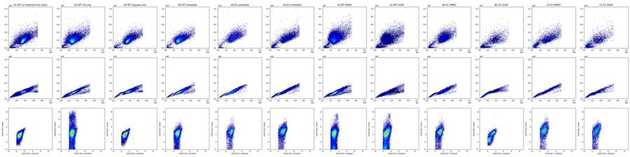
21
tool call · Bash
cat > p2.py <<'EOF'
from load import *
import matplotlib; matplotlib.use('Agg'); import matplotlib.pyplot as plt
fig,ax=plt.subplots(2,3,figsize=(18,10))
groups=[['G1','G2','G3','G6'],['A4','A1','A2','A3'],['B4','B1','B2','B3'],['C4','C1','C2','C3'],['G4','G5','G6','G3'],['E4','E1','F4','F1']]
bins=np.linspace(-2,8,200)
for a,g in zip(ax.flat,groups):
for w in g:
d=get(w); d=d[(d['FSC-A']>50000)]
a.hist(asinh(d['BL1-A'],50),bins=bins,histtype='step',density=True,label=w+' '+lay.set_index('well').loc[w,'sample'])
a.legend(fontsize=8); a.set_yscale('log'); a.set_xlabel('asinh(BL1-A/50)')
plt.tight_layout(); plt.savefig('p2.png',dpi=55)
fig,ax=plt.subplots(2,3,figsize=(18,10))
for a,g in zip(ax.flat,groups):
for w in g:
d=get(w); d=d[(d['FSC-A']>50000)]
a.hist(asinh(d['BL2-A'],50),bins=bins,histtype='step',density=True,label=w+' '+lay.set_index('well').loc[w,'sample'])
a.legend(fontsize=8); a.set_yscale('log'); a.set_xlabel('asinh(BL2-A/50)')
plt.tight_layout(); plt.savefig('p3.png',dpi=55)
EOF
python p2.py22
tool output
(Bash completed with no output)
23
tool call · Read
{
"file_path": "/task/work/p2.png"
}24
tool output
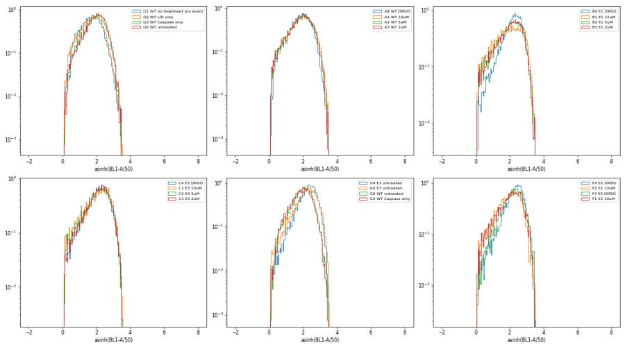
25
tool call · Read
{
"file_path": "/task/work/p3.png"
}26
tool output
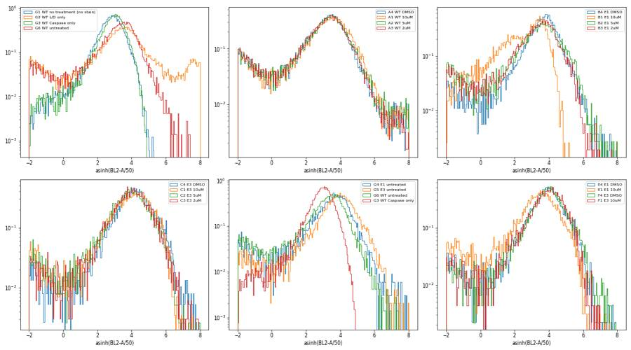
28
tool call · Bash
python -c "
from load import *
for w in ['G1','G2','G3','G6','A1','B1','C1','A4']:
d=get(w)
print(w, *[f'{c}: max={d[c].max():.0f} p99.9={np.percentile(d[c],99.9):.0f} p50={np.median(d[c]):.0f} min={d[c].min():.0f}' for c in ['BL1-A','BL1-H','BL2-A','BL2-H']], sep='\n ')
"29
tool output
G1 BL1-A: max=773 p99.9=605 p50=131 min=4 BL1-H: max=570 p99.9=386 p50=109 min=21 BL2-A: max=4715 p99.9=2657 p50=406 min=-940 BL2-H: max=2473 p99.9=1647 p50=274 min=2 G2 BL1-A: max=826 p99.9=611 p50=140 min=4 BL1-H: max=724 p99.9=383 p50=114 min=20 BL2-A: max=469842 p99.9=250454 p50=640 min=-34357 BL2-H: max=197842 p99.9=105900 p50=745 min=0 G3 BL1-A: max=769 p99.9=646 p50=167 min=4 BL1-H: max=577 p99.9=425 p50=127 min=21 BL2-A: max=3208 p99.9=2508 p50=465 min=-371 BL2-H: max=2208 p99.9=1560 p50=310 min=0 G6 BL1-A: max=796 p99.9=672 p50=178 min=4 BL1-H: max=602 p99.9=414 p50=132 min=19 BL2-A: max=40168 p99.9=13614 p50=588 min=-31439 BL2-H: max=33013 p99.9=7491 p50=583 min=0 A1 BL1-A: max=805 p99.9=695 p50=152 min=4 BL1-H: max=643 p99.9=417 p50=122 min=23 BL2-A: max=185690 p99.9=98378 p50=418 min=-19281 BL2-H: max=98070 p99.9=61527 p50=654 min=0 B1 BL1-A: max=803 p99.9=716 p50=142 min=4 BL1-H: max=513 p99.9=471 p50=121 min=19 BL2-A: max=73746 p99.9=2899 p50=242 min=-245 BL2-H: max=41864 p99.9=1818 p50=207 min=0 C1 BL1-A: max=823 p99.9=744 p50=170 min=4 BL1-H: max=707 p99.9=459 p50=136 min=24 BL2-A: max=47628 p99.9=18574 p50=1034 min=-9581 BL2-H: max=30169 p99.9=12563 p50=817 min=0 A4 BL1-A: max=797 p99.9=641 p50=159 min=4 BL1-H: max=548 p99.9=402 p50=124 min=24 BL2-A: max=164281 p99.9=96719 p50=403 min=-12278 BL2-H: max=120208 p99.9=60718 p50=724 min=0
31
tool call · Bash
cat > p4.py <<'EOF'
from load import *
import matplotlib; matplotlib.use('Agg'); import matplotlib.pyplot as plt
wells=list(lay.well)
fig,ax=plt.subplots(7,12,figsize=(36,18))
qc=[]
for i,w in enumerate(wells):
d=get(w); a=ax.flat[i]
t=d['Time'].values
h,e=np.histogram(t,bins=34,range=(0,17))
a.plot(e[:-1],h,'k-')
a2=a.twinx()
# median FSC in time bins
idx=np.digitize(t,e)-1
med=[np.median(d['FSC-A'].values[idx==k]) if (idx==k).sum()>5 else np.nan for k in range(34)]
a2.plot(e[:-1],med,'r-'); a2.set_ylim(0,5e5)
a.set_title(w,fontsize=9); a.set_ylim(0,None)
qc.append(dict(well=w,n=len(t),tmax=t.max(),cv_rate=np.std(h[1:-1])/np.mean(h[1:-1]),first_half=(t<t.max()/2).mean(),
zero_bins=(h[:-1]==0).sum(),min_rate_ratio=h[1:-1].min()/np.median(h[1:-1])))
plt.tight_layout(); plt.savefig('p4.png',dpi=40)
q=pd.DataFrame(qc); pd.set_option('display.max_rows',100); print(q.round(3).to_string())
EOF
python p4.py32
tool output
well n tmax cv_rate first_half zero_bins min_rate_ratio 0 A1 30920 16.721 0.161 0.484 0 0.661 1 A2 31266 16.571 0.217 0.524 0 0.375 2 A3 38748 16.778 0.125 0.485 0 0.796 3 A4 34861 16.734 0.208 0.467 0 0.706 4 A5 14011 16.581 0.170 0.502 0 0.587 5 A6 25118 16.726 0.151 0.480 0 0.775 6 A7 27544 16.495 0.137 0.511 0 0.489 7 A8 30067 15.853 0.276 0.478 1 0.000 8 A9 17224 16.515 0.178 0.522 0 0.363 9 A10 24604 16.639 0.145 0.492 0 0.780 10 A11 38346 16.331 0.189 0.503 0 0.645 11 A12 31708 16.608 0.228 0.528 0 0.117 12 B1 9849 16.792 0.099 0.497 0 0.817 13 B2 10963 16.731 0.145 0.513 0 0.429 14 B3 14921 16.753 0.135 0.516 0 0.481 15 B4 12172 16.570 0.227 0.511 0 0.228 16 B5 5068 16.550 0.194 0.513 0 0.162 17 B6 9638 16.830 0.165 0.516 0 0.395 18 B7 13360 16.719 0.171 0.514 0 0.308 19 B8 11210 16.671 0.243 0.521 0 0.104 20 B9 3505 16.823 0.185 0.521 0 0.332 21 B10 8268 16.540 0.216 0.518 0 0.147 22 B11 10609 16.705 0.124 0.489 0 0.832 23 B12 9382 16.354 0.302 0.518 0 0.032 24 C1 7495 16.445 0.242 0.529 0 0.091 25 C2 10263 16.756 0.237 0.526 0 0.098 26 C3 8563 16.210 0.307 0.548 0 0.030 27 C4 9241 16.738 0.168 0.471 0 0.746 28 C5 3151 15.847 0.233 0.480 1 0.000 29 C6 6099 16.406 0.265 0.528 0 0.075 30 C7 8001 15.962 0.251 0.498 1 0.000 31 C8 8215 16.038 0.310 0.510 0 0.004 32 C9 4067 16.742 0.145 0.492 0 0.683 33 C10 8011 16.063 0.311 0.516 0 0.008 34 C11 9008 15.913 0.263 0.489 1 0.000 35 C12 13163 16.730 0.291 0.533 0 0.022 36 D1 22778 16.576 0.278 0.523 0 0.046 37 D2 27593 16.720 0.165 0.482 0 0.748 38 D3 27824 16.714 0.128 0.487 0 0.819 39 D4 24551 16.284 0.240 0.482 0 0.373 40 D5 6454 16.346 0.304 0.520 0 0.030 41 D6 17066 16.372 0.286 0.526 0 0.023 42 D7 23253 16.449 0.278 0.525 0 0.020 43 D8 23299 16.660 0.217 0.477 0 0.736 44 D9 8616 15.873 0.251 0.484 1 0.000 45 D10 19657 15.928 0.244 0.474 1 0.000 46 D11 31867 16.691 0.152 0.470 0 0.819 47 D12 25256 16.702 0.173 0.491 0 0.776 48 E1 9821 16.765 0.086 0.486 0 0.887 49 E2 10681 16.762 0.107 0.498 0 0.839 50 E3 12311 16.697 0.110 0.516 0 0.790 51 E4 10059 16.771 0.221 0.446 0 0.741 52 E5 4437 16.629 0.119 0.489 0 0.803 53 E6 7547 16.611 0.130 0.497 0 0.633 54 E7 12028 15.928 0.229 0.473 1 0.000 55 E8 7979 16.644 0.219 0.504 0 0.334 56 E9 4147 16.501 0.148 0.521 0 0.416 57 E10 5492 16.508 0.236 0.445 1 0.088 58 E11 11711 15.912 0.220 0.486 1 0.000 59 E12 10755 15.860 0.283 0.504 1 0.000 60 F1 6393 16.710 0.133 0.487 0 0.765 61 F2 9910 16.619 0.198 0.485 0 0.289 62 F3 9940 15.886 0.266 0.468 1 0.000 63 F4 10729 16.326 0.308 0.539 0 0.022 64 F5 3184 16.301 0.252 0.510 0 0.190 65 F6 6320 16.815 0.177 0.475 0 0.744 66 F7 9381 16.684 0.147 0.472 0 0.799 67 F8 10605 16.653 0.260 0.523 0 0.076 68 F9 3608 15.814 0.257 0.504 1 0.000 69 F10 8439 16.746 0.156 0.483 0 0.762 70 F11 12193 16.716 0.147 0.492 0 0.780 71 F12 11679 16.118 0.354 0.542 0 0.008 72 G1 34073 16.666 0.181 0.504 0 0.697 73 G2 28006 15.946 0.293 0.485 1 0.000 74 G3 27095 16.755 0.203 0.477 0 0.764 75 G4 7482 15.918 0.305 0.475 1 0.000 76 G5 11594 16.605 0.218 0.467 0 0.624 77 G6 16054 16.439 0.323 0.538 0 0.004
33
tool call · Read
{
"file_path": "/task/work/p4.png"
}34
tool output
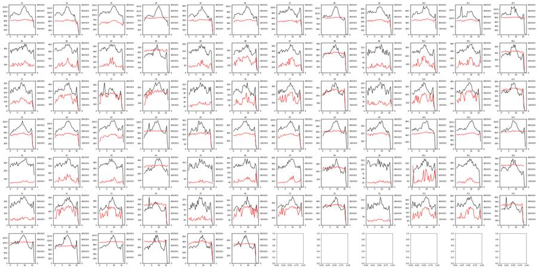
36
agent
Time traces look stable (no clogs/ran-dry). Next: FSC/SSC grid of all 78 wells to set the cell and singlet gates.
37
tool call · Bash
cat > p5.py <<'EOF'
from load import *
import matplotlib; matplotlib.use('Agg'); import matplotlib.pyplot as plt
import sys
x,y,fn,rng=sys.argv[1],sys.argv[2],sys.argv[3],float(sys.argv[4])
tr=sys.argv[5] if len(sys.argv)>5 else 'lin'
wells=list(lay.well)
fig,ax=plt.subplots(7,12,figsize=(36,21))
for i,w in enumerate(wells):
d=get(w); a=ax.flat[i]
X,Y=d[x],d[y]
if tr=='asinh':
X,Y=asinh(X,float(sys.argv[6])),asinh(Y,float(sys.argv[6])); r=[[-1,rng],[-1,rng]]
else: r=[[0,rng],[0,rng]]
a.hist2d(X,Y,bins=150,range=r,cmap='jet',cmin=1,norm=matplotlib.colors.LogNorm())
a.set_title(w+' '+lay.set_index('well').loc[w,'sample']+' '+lay.set_index('well').loc[w,'conditioned_media'][:4],fontsize=10)
plt.tight_layout(); plt.savefig(fn,dpi=35)
EOF
python p5.py FSC-A SSC-A p5.png 1.05e638
tool output
(Bash completed with no output)
39
tool call · Read
{
"file_path": "/task/work/p5.png"
}40
tool output
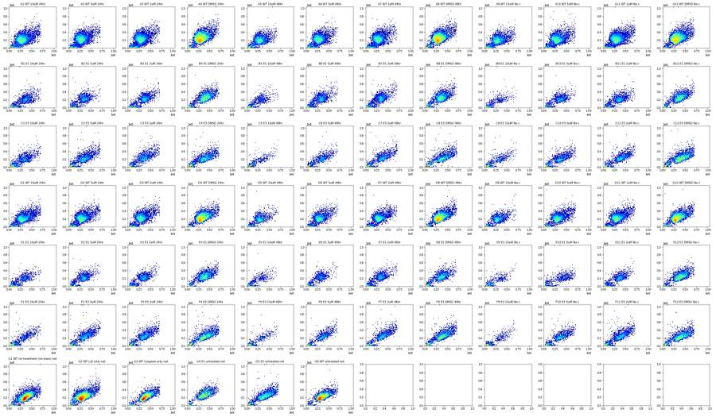
42
tool call · Bash
python -c "
from load import *
for w in ['G1','A4','B1','C5','E1']:
d=get(w)
print(w, ' '.join(f'{c}:max={d[c].max():.0f},p99.9={np.percentile(d[c],99.9):.0f},min={d[c].min():.0f}' for c in ['FSC-A','FSC-H','FSC-W','SSC-A','SSC-H','SSC-W']))
"43
tool output
G1 FSC-A:max=710099,p99.9=701043,min=20992 FSC-H:max=414202,p99.9=340323,min=25034 FSC-W:max=322,p99.9=282,min=40 SSC-A:max=1048575,p99.9=621557,min=-63578 SSC-H:max=947353,p99.9=312789,min=0 SSC-W:max=322,p99.9=268,min=0 A4 FSC-A:max=710472,p99.9=692125,min=22249 FSC-H:max=412856,p99.9=342599,min=25163 FSC-W:max=375,p99.9=280,min=44 SSC-A:max=1048575,p99.9=726692,min=-17393 SSC-H:max=437147,p99.9=321896,min=0 SSC-W:max=375,p99.9=282,min=0 B1 FSC-A:max=705050,p99.9=695781,min=21117 FSC-H:max=369237,p99.9=342736,min=25140 FSC-W:max=290,p99.9=247,min=41 SSC-A:max=1048575,p99.9=621171,min=-6052 SSC-H:max=973016,p99.9=362653,min=326 SSC-W:max=277,p99.9=232,min=0 C5 FSC-A:max=698763,p99.9=681921,min=21796 FSC-H:max=419738,p99.9=361562,min=25094 FSC-W:max=302,p99.9=240,min=46 SSC-A:max=889346,p99.9=682196,min=-3275 SSC-H:max=563309,p99.9=392131,min=75 SSC-W:max=274,p99.9=219,min=0 E1 FSC-A:max=703050,p99.9=691691,min=11116 FSC-H:max=401528,p99.9=345231,min=25129 FSC-W:max=375,p99.9=221,min=38 SSC-A:max=1048575,p99.9=525401,min=-2783 SSC-H:max=567447,p99.9=287608,min=0 SSC-W:max=289,p99.9=212,min=0
45
tool call · Bash
python -c "
from load import *
r=[]
for w in lay.well:
d=get(w)
r.append((w,len(d),round(100*(d['FSC-A']>680000).mean(),2),round(100*(d['FSC-A']>700000).mean(),2),round(100*(d['SSC-A']>=1048575).mean(),3), round(100*(d['FSC-A']<100000).mean(),1)))
print(pd.DataFrame(r,columns=['w','n','fsc>680k%','fsc>700k%','ssc_sat%','fsc<100k%']).to_string())
"46
tool output
w n fsc>680k% fsc>700k% ssc_sat% fsc<100k% 0 A1 30920 0.30 0.06 0.000 25.1 1 A2 31266 0.21 0.04 0.000 27.7 2 A3 38748 0.12 0.02 0.000 33.9 3 A4 34861 0.18 0.06 0.003 5.0 4 A5 14011 0.10 0.00 0.007 26.6 5 A6 25118 0.10 0.01 0.004 26.1 6 A7 27544 0.13 0.01 0.000 29.7 7 A8 30067 0.24 0.07 0.007 5.9 8 A9 17224 0.23 0.02 0.012 28.7 9 A10 24604 0.27 0.04 0.000 24.2 10 A11 38346 0.22 0.04 0.005 28.7 11 A12 31708 0.34 0.09 0.006 5.9 12 B1 9849 0.27 0.04 0.020 42.2 13 B2 10963 0.20 0.02 0.009 46.4 14 B3 14921 0.24 0.03 0.000 45.3 15 B4 12172 0.44 0.06 0.016 13.3 16 B5 5068 0.22 0.04 0.000 45.2 17 B6 9638 0.21 0.04 0.010 37.1 18 B7 13360 0.20 0.03 0.015 43.6 19 B8 11210 0.40 0.08 0.009 17.8 20 B9 3505 0.23 0.17 0.029 48.5 21 B10 8268 0.18 0.01 0.000 42.7 22 B11 10609 0.24 0.03 0.009 42.5 23 B12 9382 0.53 0.09 0.011 13.8 24 C1 7495 0.56 0.11 0.027 39.5 25 C2 10263 0.49 0.06 0.019 36.7 26 C3 8563 0.71 0.16 0.023 34.9 27 C4 9241 0.85 0.14 0.054 29.9 28 C5 3151 0.13 0.00 0.000 47.5 29 C6 6099 0.48 0.13 0.016 41.6 30 C7 8001 0.90 0.14 0.025 37.7 31 C8 8215 1.23 0.22 0.024 24.6 32 C9 4067 0.52 0.07 0.000 44.9 33 C10 8011 0.75 0.16 0.000 37.7 34 C11 9008 0.54 0.09 0.033 34.9 35 C12 13163 0.97 0.14 0.023 18.0 36 D1 22778 0.36 0.07 0.000 29.5 37 D2 27593 0.22 0.05 0.004 29.3 38 D3 27824 0.17 0.03 0.000 36.1 39 D4 24551 0.31 0.06 0.008 5.6 40 D5 6454 0.23 0.08 0.000 23.8 41 D6 17066 0.16 0.03 0.000 29.7 42 D7 23253 0.19 0.03 0.000 33.6 43 D8 23299 0.40 0.10 0.004 6.3 44 D9 8616 0.30 0.05 0.000 26.5 45 D10 19657 0.24 0.03 0.000 26.4 46 D11 31867 0.21 0.04 0.000 30.3 47 D12 25256 0.29 0.06 0.004 7.0 48 E1 9821 0.21 0.05 0.010 57.1 49 E2 10681 0.12 0.03 0.000 47.0 50 E3 12311 0.12 0.02 0.000 52.1 51 E4 10059 0.30 0.04 0.010 15.2 52 E5 4437 0.14 0.02 0.045 55.1 53 E6 7547 0.13 0.01 0.040 48.6 54 E7 12028 0.25 0.05 0.000 51.3 55 E8 7979 0.33 0.08 0.013 21.1 56 E9 4147 0.22 0.07 0.000 57.7 57 E10 5492 0.56 0.05 0.073 47.1 58 E11 11711 0.09 0.02 0.017 52.8 59 E12 10755 0.45 0.04 0.000 13.1 60 F1 6393 0.28 0.06 0.016 48.8 61 F2 9910 0.69 0.14 0.061 36.1 62 F3 9940 0.52 0.07 0.020 38.2 63 F4 10729 0.99 0.20 0.028 20.6 64 F5 3184 0.22 0.03 0.000 49.6 65 F6 6320 0.54 0.03 0.000 36.7 66 F7 9381 0.49 0.10 0.021 36.6 67 F8 10605 0.82 0.14 0.019 23.6 68 F9 3608 0.14 0.06 0.000 57.0 69 F10 8439 0.40 0.07 0.024 40.1 70 F11 12193 0.48 0.07 0.008 41.1 71 F12 11679 0.68 0.15 0.026 22.5 72 G1 34073 0.50 0.12 0.009 4.7 73 G2 28006 0.26 0.06 0.011 4.3 74 G3 27095 0.48 0.12 0.007 5.4 75 G4 7482 0.33 0.04 0.013 8.1 76 G5 11594 0.91 0.14 0.026 20.8 77 G6 16054 0.46 0.12 0.012 4.5
48
tool call · Bash
cat > p6.py <<'EOF'
from load import *
import matplotlib; matplotlib.use('Agg'); import matplotlib.pyplot as plt
wells=['G1','G2','A4','A1','A9','B4','B1','B9','C4','C1','E1','F9']
fig,ax=plt.subplots(3,6,figsize=(30,15))
for i,w in enumerate(wells[:6]+wells[6:]):
d=get(w); a=ax.flat[i]
a.hist2d(d['FSC-A'],d['SSC-A'],bins=200,range=[[0,7.5e5],[0,7.5e5]],cmap='jet',cmin=1,norm=matplotlib.colors.LogNorm())
a.set_title(w+' '+lay.set_index('well').loc[w,'sample'])
for i,w in enumerate(['G1','A1','B1','C1','E1','F9']):
d=get(w); a=ax.flat[12+i]
a.hist2d(d['FSC-A'],d['FSC-H'],bins=200,range=[[0,7.5e5],[0,4.5e5]],cmap='jet',cmin=1,norm=matplotlib.colors.LogNorm())
a.set_title(w+' FSC-A vs FSC-H')
for a in ax.flat: a.grid(alpha=.3)
plt.tight_layout(); plt.savefig('p6.png',dpi=40)
EOF
python p6.py49
tool output
(Bash completed with no output)
50
tool call · Read
{
"file_path": "/task/work/p6.png"
}51
tool output
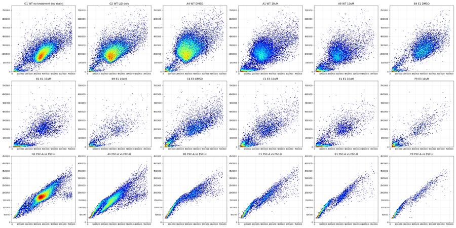
53
agent
Scatter gates look feasible (debris near origin in KO+CPT wells; doublets off the FSC-A/H diagonal). Now checking SYTOX (BL2) live/dead separation across wells.
54
tool call · Bash
cat > p7.py <<'EOF'
from load import *
import matplotlib; matplotlib.use('Agg'); import matplotlib.pyplot as plt
wells=list(lay.well)
fig,ax=plt.subplots(7,12,figsize=(36,21))
for i,w in enumerate(wells):
d=get(w); a=ax.flat[i]
a.hist2d(d['FSC-A']/1e3,asinh(d['BL2-A'],200),bins=150,range=[[0,750],[-2,9]],cmap='jet',cmin=1,norm=matplotlib.colors.LogNorm())
a.axhline(asinh(5000,200),color='k',lw=.5); a.axhline(asinh(20000,200),color='k',lw=.5)
a.set_title(w+' '+lay.set_index('well').loc[w,'sample']+' '+lay.set_index('well').loc[w,'conditioned_media'][:4],fontsize=10)
plt.tight_layout(); plt.savefig('p7.png',dpi=35)
EOF
python p7.py55
tool output
(Bash completed with no output)
56
tool call · Read
{
"file_path": "/task/work/p7.png"
}57
tool output
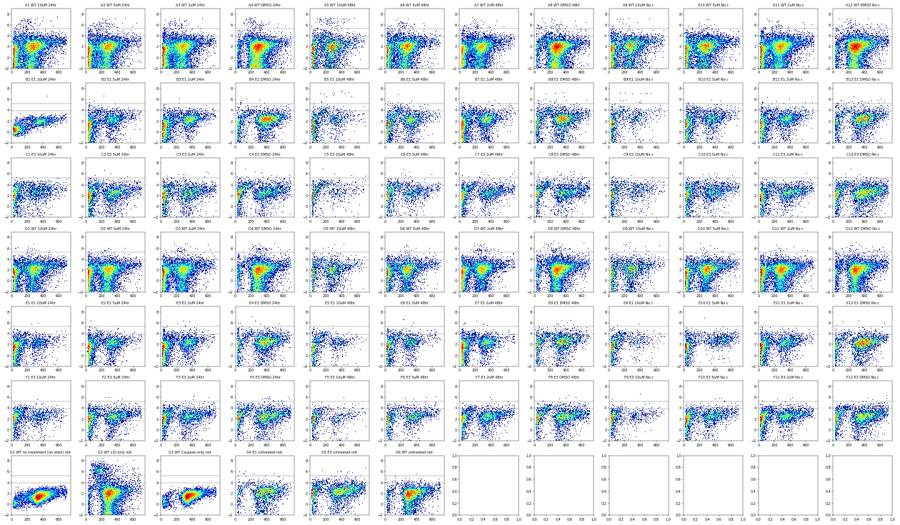
59
tool call · Bash
cat > p8.py <<'EOF'
from load import *
import matplotlib; matplotlib.use('Agg'); import matplotlib.pyplot as plt
fig,ax=plt.subplots(1,3,figsize=(24,7))
bins=np.linspace(-3,10,250)
groups=[['G1','G2','G3','G6','G4','G5'],['A4','A1','D4','D1','A12','A9'],['C4','C1','F4','F1','B4','B1']]
for a,g in zip(ax,groups):
for w in g:
d=get(w); d=d[(d['FSC-A']>150000)&(d['SSC-A']>50000)]
a.hist(asinh(d['BL2-A'],100),bins=bins,histtype='step',label=w+' '+lay.set_index('well').loc[w,'sample'],density=True)
a.set_yscale('log'); a.legend()
ticks=[0,1e3,3e3,1e4,3e4,1e5,3e5]; a.set_xticks(asinh(ticks,100)); a.set_xticklabels([f'{t:.0e}' for t in ticks])
a.grid(alpha=.3)
plt.tight_layout(); plt.savefig('p8.png',dpi=55)
EOF
python p8.py60
tool output
(Bash completed with no output)
61
tool call · Read
{
"file_path": "/task/work/p8.png"
}62
tool output
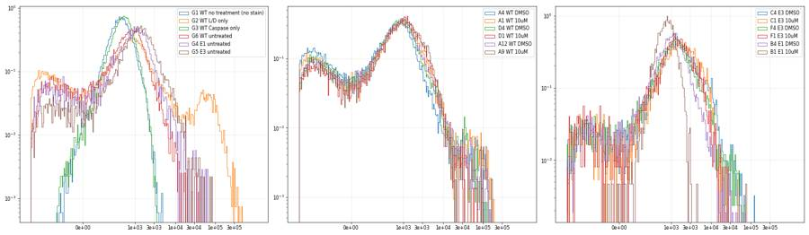
64
tool call · Bash
python -c "
from load import *
r=[]
for w in lay.well:
d=get(w); c=d[(d['FSC-A']>150000)&(d['SSC-A']>50000)]
b=c['BL1-A']
r.append((w,lay.set_index('well').loc[w,'sample'],len(c),*np.percentile(b,[50,95,99,99.9]).round(0),b.max(),round(100*(b>500).mean(),2), round(np.corrcoef(c['BL1-A'],c['FSC-A'])[0,1],2), round(np.median(c['BL1-A']/c['FSC-A']*1e3),3)))
pd.set_option('display.width',200)
print(pd.DataFrame(r,columns=['w','s','n','p50','p95','p99','p999','max','pct>500','r_fsc','bl1/fsc']).to_string())
"65
tool output
w s n p50 p95 p99 p999 max pct>500 r_fsc bl1/fsc 0 A1 WT 10uM 20710 188.0 442.0 573.0 724.0 805.0 2.47 0.41 0.615 1 A2 WT 5uM 20084 181.0 423.0 542.0 689.0 795.0 1.89 0.38 0.625 2 A3 WT 2uM 21963 180.0 428.0 550.0 682.0 804.0 1.96 0.41 0.615 3 A4 WT DMSO 32442 163.0 369.0 481.0 644.0 797.0 0.74 0.33 0.543 4 A5 WT 10uM 9293 200.0 444.0 561.0 682.0 750.0 2.36 0.27 0.659 5 A6 WT 5uM 16663 180.0 424.0 551.0 697.0 794.0 1.94 0.39 0.622 6 A7 WT 2uM 17056 182.0 426.0 536.0 684.0 803.0 1.79 0.40 0.623 7 A8 WT DMSO 27668 164.0 375.0 486.0 657.0 810.0 0.81 0.35 0.541 8 A9 WT 10uM 10923 219.0 459.0 562.0 690.0 769.0 2.71 0.33 0.711 9 A10 WT 5uM 17027 194.0 437.0 550.0 682.0 785.0 2.08 0.37 0.645 10 A11 WT 2uM 24681 188.0 430.0 551.0 688.0 810.0 1.96 0.41 0.621 11 A12 WT DMSO 29319 167.0 380.0 498.0 659.0 787.0 0.97 0.36 0.533 12 B1 E1 10uM 4043 289.0 541.0 656.0 758.0 803.0 8.68 0.28 0.777 13 B2 E1 5uM 4698 267.0 502.0 620.0 761.0 804.0 5.11 0.34 0.750 14 B3 E1 2uM 6182 261.0 509.0 617.0 779.0 802.0 5.61 0.35 0.692 15 B4 E1 DMSO 10115 246.0 474.0 599.0 714.0 801.0 3.71 0.33 0.609 16 B5 E1 10uM 2166 278.0 506.0 607.0 704.0 712.0 5.49 0.27 0.882 17 B6 E1 5uM 5148 251.0 477.0 606.0 718.0 781.0 3.55 0.33 0.742 18 B7 E1 2uM 6169 251.0 474.0 594.0 709.0 795.0 3.84 0.32 0.726 19 B8 E1 DMSO 8670 238.0 458.0 587.0 723.0 796.0 2.87 0.30 0.641 20 B9 E1 10uM 1359 316.0 533.0 632.0 718.0 770.0 7.87 0.38 0.963 21 B10 E1 5uM 3905 278.0 518.0 640.0 730.0 766.0 6.35 0.35 0.751 22 B11 E1 2uM 4952 264.0 506.0 622.0 737.0 788.0 5.29 0.35 0.717 23 B12 E1 DMSO 7761 257.0 500.0 618.0 719.0 812.0 4.92 0.39 0.659 24 C1 E3 10uM 3552 275.0 540.0 673.0 784.0 823.0 7.88 0.41 0.778 25 C2 E3 5uM 5578 248.0 516.0 641.0 765.0 819.0 6.01 0.43 0.673 26 C3 E3 2uM 4911 246.0 514.0 640.0 753.0 805.0 5.74 0.46 0.648 27 C4 E3 DMSO 5872 251.0 522.0 650.0 775.0 813.0 6.25 0.39 0.617 28 C5 E3 10uM 1225 291.0 532.0 655.0 792.0 818.0 7.27 0.34 0.910 29 C6 E3 5uM 2931 264.0 523.0 645.0 768.0 810.0 6.28 0.41 0.717 30 C7 E3 2uM 4303 263.0 542.0 674.0 765.0 791.0 7.55 0.44 0.675 31 C8 E3 DMSO 5689 246.0 515.0 656.0 774.0 806.0 5.94 0.40 0.602 32 C9 E3 10uM 1725 301.0 542.0 664.0 776.0 812.0 7.71 0.36 0.835 33 C10 E3 5uM 4223 273.0 540.0 656.0 757.0 828.0 7.51 0.40 0.706 34 C11 E3 2uM 5080 267.0 528.0 654.0 756.0 801.0 6.79 0.39 0.652 35 C12 E3 DMSO 10235 242.0 512.0 649.0 761.0 809.0 5.67 0.39 0.586 36 D1 WT 10uM 14409 203.0 448.0 571.0 709.0 781.0 2.55 0.43 0.620 37 D2 WT 5uM 17717 191.0 417.0 533.0 668.0 781.0 1.60 0.41 0.629 38 D3 WT 2uM 15866 199.0 428.0 546.0 702.0 781.0 1.76 0.43 0.656 39 D4 WT DMSO 22895 183.0 399.0 514.0 664.0 760.0 1.14 0.39 0.563 40 D5 WT 10uM 4477 209.0 441.0 559.0 647.0 783.0 2.32 0.37 0.666 41 D6 WT 5uM 10934 198.0 424.0 548.0 681.0 753.0 1.96 0.42 0.652 42 D7 WT 2uM 13860 202.0 423.0 541.0 693.0 802.0 1.75 0.41 0.660 43 D8 WT DMSO 21486 182.0 404.0 523.0 668.0 815.0 1.40 0.39 0.564 44 D9 WT 10uM 5739 207.0 441.0 570.0 720.0 739.0 2.44 0.40 0.654 45 D10 WT 5uM 13340 210.0 439.0 556.0 704.0 751.0 2.26 0.42 0.651 46 D11 WT 2uM 20381 203.0 426.0 547.0 705.0 766.0 1.88 0.41 0.650 47 D12 WT DMSO 23089 178.0 393.0 510.0 675.0 823.0 1.15 0.38 0.554 48 E1 E1 10uM 2617 279.0 504.0 639.0 736.0 767.0 5.24 0.34 0.773 49 E2 E1 5uM 4676 264.0 480.0 608.0 729.0 799.0 4.00 0.36 0.754 50 E3 E1 2uM 4645 271.0 484.0 604.0 743.0 774.0 3.92 0.33 0.759 51 E4 E1 DMSO 8238 268.0 494.0 598.0 714.0 792.0 4.59 0.34 0.689 52 E5 E1 10uM 1411 281.0 481.0 610.0 673.0 709.0 3.33 0.23 0.824 53 E6 E1 5uM 3181 272.0 469.0 583.0 707.0 780.0 3.27 0.30 0.807 54 E7 E1 2uM 4812 262.0 471.0 589.0 725.0 807.0 3.53 0.35 0.754 55 E8 E1 DMSO 5866 254.0 475.0 591.0 708.0 773.0 3.49 0.32 0.685 56 E9 E1 10uM 1142 288.0 514.0 622.0 730.0 734.0 6.22 0.33 0.875 57 E10 … [2,136 more characters not shown]
67
thinking
No positive population shows up in BL1 (caspase) in any well, with events staying below about 830 units even at 10 µM CPT, and B1 seems to have missed SYTOX. I'm building pooled plots next to place the gates.
68
tool call · Bash
cat > p9.py <<'EOF'
from load import *
import matplotlib; matplotlib.use('Agg'); import matplotlib.pyplot as plt
rng=np.random.default_rng(0)
def pool(ws,n=4000):
return pd.concat([get(w).sample(min(n,len(get(w))),random_state=0) for w in ws])
wt=pool([w for w in lay.well if w[0] in 'AD'])
ko_cpt=pool([w for w in lay.well if w[0] in 'BCEF' and not w.endswith(('4','8','12'))])
ko_dmso=pool([w for w in lay.well if w[0] in 'BCEF' and w.endswith(('4','8','12'))])
ctl=pool(['G1','G2','G3','G6'])
fig,ax=plt.subplots(2,4,figsize=(32,16))
for i,(nm,d) in enumerate([('WT',wt),('KO CPT',ko_cpt),('KO DMSO',ko_dmso),('G ctl',ctl)]):
a=ax[0,i]; a.hist2d(d['FSC-A'],d['SSC-A'],bins=250,range=[[0,7.5e5],[0,8e5]],cmap='jet',cmin=1,norm=matplotlib.colors.LogNorm()); a.set_title(nm)
a.set_xticks(np.arange(0,7.6e5,5e4)); a.set_yticks(np.arange(0,8e5,5e4)); a.grid(alpha=.4); a.tick_params(labelsize=7)
a=ax[1,i]; a.hist2d(d['FSC-A'],d['FSC-H'],bins=250,range=[[0,7.5e5],[0,4.5e5]],cmap='jet',cmin=1,norm=matplotlib.colors.LogNorm())
a.set_xticks(np.arange(0,7.6e5,5e4)); a.set_yticks(np.arange(0,4.5e5,2.5e4)); a.grid(alpha=.4); a.tick_params(labelsize=7)
plt.tight_layout(); plt.savefig('p9.png',dpi=40)
EOF
python p9.py69
tool output
(Bash completed with no output)
70
tool call · Read
{
"file_path": "/task/work/p9.png"
}71
tool output
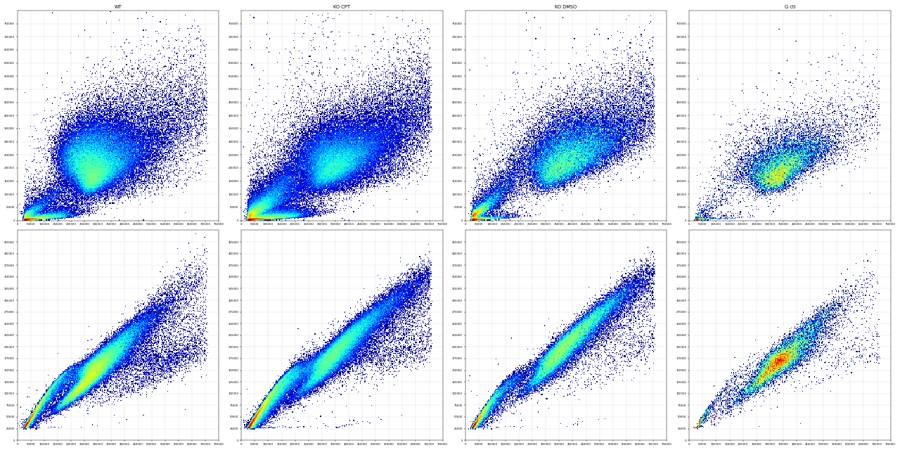
73
tool call · Bash
cat > p10.py <<'EOF'
from load import *
import matplotlib; matplotlib.use('Agg'); import matplotlib.pyplot as plt
def pool(ws,n=4000):
return pd.concat([get(w).sample(min(n,len(get(w))),random_state=0) for w in ws])
wt=pool([w for w in lay.well if w[0] in 'AD'])
ko_cpt=pool([w for w in lay.well if w[0] in 'BCEF' and not w.endswith(('4','8','12'))])
fig,ax=plt.subplots(1,2,figsize=(20,10))
for a,(nm,d) in zip(ax,[('WT',wt),('KO CPT',ko_cpt)]):
a.hist2d(d['FSC-A']/1e3,d['SSC-A']/1e3,bins=200,range=[[0,750],[0,800]],cmap='jet',cmin=1,norm=matplotlib.colors.LogNorm()); a.set_title(nm)
a.set_xticks(np.arange(0,751,50)); a.set_yticks(np.arange(0,801,50)); a.grid(alpha=.5)
plt.tight_layout(); plt.savefig('p10.png',dpi=50)
EOF
python p10.py74
tool output
(Bash completed with no output)
75
tool call · Read
{
"file_path": "/task/work/p10.png"
}76
tool output
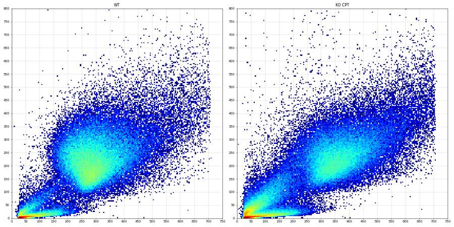
78
tool call · Bash
cat > p11.py <<'EOF'
from load import *
import matplotlib; matplotlib.use('Agg'); import matplotlib.pyplot as plt
from matplotlib.path import Path
CELL=[(120000,60000),(250000,60000),(450000,95000),(700000,140000),(700000,1048000),(200000,1048000),(120000,250000)]
def pool(ws,n=4000):
return pd.concat([get(w).sample(min(n,len(get(w))),random_state=0) for w in ws])
d=pool(list(lay.well[:72]),3000)
inside=Path(CELL).contains_points(d[['FSC-A','SSC-A']].values)
c=d[inside]
fig,ax=plt.subplots(1,3,figsize=(30,10))
ax[0].hist2d(d['FSC-A']/1e3,d['SSC-A']/1e3,bins=200,range=[[0,750],[0,800]],cmap='jet',cmin=1,norm=matplotlib.colors.LogNorm())
P=np.array(CELL+[CELL[0]])/1e3; ax[0].plot(P[:,0],P[:,1],'k-',lw=2)
ax[1].hist2d(c['FSC-A']/1e3,c['FSC-H']/1e3,bins=200,range=[[0,750],[0,450]],cmap='jet',cmin=1,norm=matplotlib.colors.LogNorm())
ax[1].set_xticks(np.arange(0,751,50)); ax[1].set_yticks(np.arange(0,451,25)); ax[1].grid(alpha=.5)
ax[2].hist2d(c['FSC-A']/1e3,c['FSC-H']/c['FSC-A'],bins=200,range=[[0,750],[0.2,1.0]],cmap='jet',cmin=1,norm=matplotlib.colors.LogNorm())
ax[2].set_xticks(np.arange(0,751,50)); ax[2].grid(alpha=.5)
plt.tight_layout(); plt.savefig('p11.png',dpi=45)
print(inside.mean())
EOF
python p11.py79
tool output
0.6002592592592593
80
tool call · Read
{
"file_path": "/task/work/p11.png"
}81
tool output
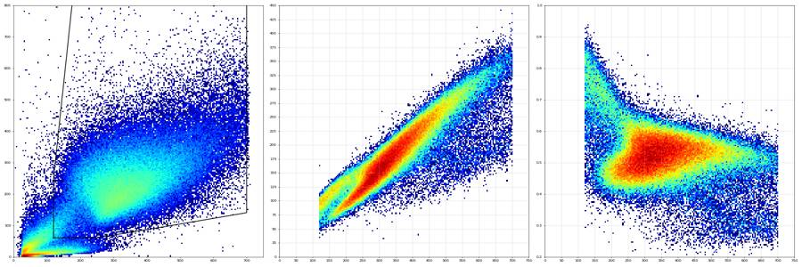
83
agent
Cell and singlet gate shapes are set. Now choosing the SYTOX (live/dead) threshold from the controls.
84
tool call · Bash
cat > thr.py <<'EOF'
from load import *
from matplotlib.path import Path
CELL=[(120000,60000),(250000,60000),(450000,95000),(700000,140000),(700000,1048000),(200000,1048000),(120000,250000)]
SING=[(115000,45000),(710000,290000),(710000,460000),(115000,120000)]
def sing(w):
d=get(w)
m=Path(CELL).contains_points(d[['FSC-A','SSC-A']].values)
d=d[m]; m=Path(SING).contains_points(d[['FSC-A','FSC-H']].values)
return d[m]
r=[]
for w in lay.well:
s=sing(w); b=s['BL2-A']
r.append((w,lay.set_index('well').loc[w,'sample'],len(s),*[round(100*(b>t).mean(),2) for t in [3000,5000,10000,15000,20000,30000]]))
pd.set_option('display.width',200); pd.set_option('display.max_rows',100)
print(pd.DataFrame(r,columns=['w','s','n','>3k','>5k','>10k','>15k','>20k','>30k']).to_string())
EOF
python thr.py85
tool output
w s n >3k >5k >10k >15k >20k >30k 0 A1 WT 10uM 19107 7.21 3.29 1.49 1.08 0.95 0.81 1 A2 WT 5uM 19252 6.06 2.93 1.46 1.16 0.99 0.78 2 A3 WT 2uM 20734 5.44 2.36 1.03 0.81 0.67 0.51 3 A4 WT DMSO 31140 4.14 2.20 1.13 0.87 0.76 0.62 4 A5 WT 10uM 8868 10.70 5.92 2.67 2.10 1.98 1.78 5 A6 WT 5uM 15927 7.36 3.52 1.24 0.86 0.75 0.55 6 A7 WT 2uM 16270 6.55 2.89 1.01 0.61 0.50 0.36 7 A8 WT DMSO 26744 4.37 2.24 0.89 0.61 0.52 0.37 8 A9 WT 10uM 10360 10.27 3.74 0.81 0.41 0.33 0.25 9 A10 WT 5uM 16115 8.23 3.30 1.08 0.67 0.49 0.32 10 A11 WT 2uM 23306 6.89 2.82 0.80 0.52 0.44 0.26 11 A12 WT DMSO 27758 6.20 2.91 1.16 0.72 0.55 0.35 12 B1 E1 10uM 3816 0.08 0.03 0.03 0.03 0.03 0.03 13 B2 E1 5uM 4600 12.67 4.98 0.78 0.33 0.20 0.11 14 B3 E1 2uM 6024 8.76 2.72 0.20 0.10 0.05 0.02 15 B4 E1 DMSO 9814 7.00 2.64 0.59 0.17 0.10 0.08 16 B5 E1 10uM 2185 24.90 11.81 2.61 1.19 0.96 0.78 17 B6 E1 5uM 5054 13.45 5.70 1.25 0.36 0.16 0.12 18 B7 E1 2uM 6073 13.06 5.27 0.92 0.33 0.23 0.13 19 B8 E1 DMSO 8537 14.19 6.88 1.64 0.74 0.43 0.23 20 B9 E1 10uM 1361 32.84 15.50 3.31 1.40 1.03 0.73 21 B10 E1 5uM 3832 17.15 7.15 1.25 0.39 0.16 0.08 22 B11 E1 2uM 4888 14.40 6.10 0.84 0.27 0.14 0.06 23 B12 E1 DMSO 7581 10.35 4.66 1.24 0.62 0.40 0.12 24 C1 E3 10uM 3454 25.65 11.29 1.24 0.17 0.06 0.03 25 C2 E3 5uM 5573 17.35 8.31 1.78 0.39 0.18 0.11 26 C3 E3 2uM 4891 18.77 8.48 1.74 0.67 0.37 0.22 27 C4 E3 DMSO 5965 23.89 12.94 3.84 1.22 0.79 0.55 28 C5 E3 10uM 1291 42.76 25.95 6.04 1.16 0.54 0.39 29 C6 E3 5uM 2984 23.69 12.33 2.45 0.84 0.57 0.34 30 C7 E3 2uM 4305 20.58 9.31 1.88 0.53 0.39 0.21 31 C8 E3 DMSO 5757 23.97 13.17 3.63 1.48 0.80 0.50 32 C9 E3 10uM 1754 39.45 21.38 4.39 0.74 0.46 0.11 33 C10 E3 5uM 4231 25.57 12.64 2.69 0.92 0.52 0.33 34 C11 E3 2uM 5047 17.99 7.31 0.99 0.40 0.22 0.08 35 C12 E3 DMSO 10193 17.52 8.52 1.94 0.59 0.24 0.07 36 D1 WT 10uM 13283 7.92 3.18 0.65 0.33 0.23 0.11 37 D2 WT 5uM 16909 5.13 2.05 0.46 0.26 0.19 0.11 38 D3 WT 2uM 15189 6.49 2.61 0.99 0.72 0.61 0.32 39 D4 WT DMSO 21957 5.91 3.05 1.17 0.79 0.68 0.46 40 D5 WT 10uM 4286 10.48 5.32 1.28 0.72 0.42 0.26 41 D6 WT 5uM 10448 7.25 3.23 1.00 0.61 0.53 0.31 42 D7 WT 2uM 13384 7.88 3.47 1.48 1.23 1.00 0.58 43 D8 WT DMSO 20409 9.38 4.96 1.89 1.23 1.04 0.68 44 D9 WT 10uM 5506 10.59 4.72 1.25 0.82 0.65 0.36 45 D10 WT 5uM 12714 6.93 2.87 0.85 0.53 0.42 0.23 46 D11 WT 2uM 19577 4.92 1.84 0.54 0.34 0.28 0.14 47 D12 WT DMSO 22153 6.27 2.86 0.96 0.53 0.37 0.20 48 E1 E1 10uM 2602 13.49 4.77 0.23 0.08 0.08 0.08 49 E2 E1 5uM 4667 9.64 4.14 0.47 0.06 0.02 0.00 50 E3 E1 2uM 4645 11.60 4.33 0.71 0.22 0.17 0.09 51 E4 E1 DMSO 8141 13.84 5.77 1.08 0.48 0.23 0.15 52 E5 E1 10uM 1463 23.79 9.91 0.82 0.14 0.07 0.07 53 E6 E1 5uM 3202 14.65 5.62 1.00 0.50 0.34 0.25 54 E7 E1 2uM 4798 13.21 5.27 0.75 0.31 0.23 0.13 55 E8 E1 DMSO 5844 19.27 8.66 1.57 0.62 0.36 0.21 56 E9 E1 10uM 1206 33.58 14.43 1.41 0.33 0.25 0.17 57 E10 E1 5uM 2308 24.09 9.01 0.78 0.22 0.13 0.13 58 E11 E1 2uM 4436 11.29 4.28 0.63 0.14 0.07 0.05 59 E12 E1 DMSO 8885 8.32 3.62 0.51 0.12 0.06 0.05 60 F1 E3 10uM 2397 18.40 7.55 0.96 0.29 0.13 0.00 61 F2 E3 5uM 5498 12.73 4.86 0.87 0.33 0.20 0.13 62 F3 E3 2uM 5370 15.87 6.41 0.93 0.24 0.15 0.09 63 F4 E3 DMSO 8058 15.66 7.47 1.91 0.96 0.63 0.36 64 F5 E3 10uM 1192 18.88 8.72 0.76 0.25 0.17 0.08 65 F6 E3 5uM 3475 13.53 5.67 1.55 0.63 0.46 0.32 66 F7 E3 2uM 5237 11.57 4.60 0.88 0.50 0.36 0.25 67 F8 E3 DMSO 7643 16.12 7.73 1.35 0.33 0.18 0.12 68 F9 E3 10uM 1138 19.07 7.21 0.79 0.26 0.26 0.18 69 F10 E3 5uM 4311 14.52 5.20 0.74 0.46 0.28 0.09 70 F11 E3 2uM 6126 16.93 5.89 0.57 0.20 0.13 0.07 71 F12 E3 DMSO 8578 15.52 7.34 1.34 0.43 0.24 0.13 72 G1 WT no treatment (no stain) 30130 0.04 0.00 0.00 0.00 0.00 0.00 73 G … [398 more characters not shown]
87
tool call · Bash
cat >> thr.py <<'EOF'
print()
for w in ['G1','G2','G3','G6','G4','G5','A4','D4','A12','D12']:
s=sing(w); s=s[s['BL2-A']<15000]; b=s['BL1-A']
print(w, len(s), np.percentile(b,[50,95,99,99.5,99.9]).round(0), b.max())
EOF
python thr.py | tail -1188
tool output
G1 30130 [134. 311. 436. 488. 601.] 773.0 G2 23692 [143. 324. 443. 494. 603.] 733.0 G3 24245 [170. 377. 495. 537. 639.] 753.0 G6 14543 [180. 384. 501. 543. 658.] 755.0 G4 6551 [256. 485. 598. 638. 722.] 806.0 G5 8561 [249. 518. 642. 686. 766.] 799.0 A4 30869 [159. 355. 463. 511. 618.] 797.0 D4 21783 [179. 385. 494. 539. 634.] 760.0 A12 27559 [162. 361. 475. 519. 633.] 755.0 D12 22035 [174. 376. 477. 518. 617.] 798.0
90
agent
Gate thresholds chosen: SYTOX live < 15,000 (valley in the L/D-only control G2), caspase+ BL1 > 500 (~99.5th percentile of the caspase-FMO G2). Building the FlowKit strategy now.
91
tool call · Bash
python -c "
import flowkit as fk, inspect
print(fk.__version__)
print(inspect.signature(fk.GatingStrategy.add_gate))
print(inspect.signature(fk.gates.PolygonGate.__init__))
print(inspect.signature(fk.gates.RectangleGate.__init__))
print(inspect.signature(fk.Dimension.__init__))
print([m for m in dir(fk.GatingResults) if not m.startswith('_')])
"92
tool output (error)
Exit code 1 Traceback (most recent call last): File "<string>", line 8, in <module> AttributeError: module 'flowkit' has no attribute 'GatingResults' 1.2.3 (self, gate, gate_path, sample_id=None) (self, gate_name, dimensions, vertices, use_complement=False) (self, gate_name, dimensions, use_complement=False) (self, dimension_id, compensation_ref='uncompensated', transformation_ref=None, range_min=None, range_max=None)
93
tool call · Bash
mkdir -p /task/outputs && cd /task/work && cat > gate.py <<'EOF'
import flowkit as fk, pandas as pd, numpy as np
lay=pd.read_csv('/task/inputs/plate_layout.csv')
CELL=[(120000,60000),(250000,60000),(450000,95000),(700000,140000),(700000,1048000),(200000,1048000),(120000,250000)]
SING=[(115000,45000),(710000,290000),(710000,460000),(115000,120000)]
LIVE_MAX=15000
CASP_MIN=500
U='uncompensated'
g=fk.GatingStrategy()
g.add_gate(fk.gates.PolygonGate('cells',[fk.Dimension('FSC-A',U),fk.Dimension('SSC-A',U)],CELL),('root',))
g.add_gate(fk.gates.PolygonGate('singlets',[fk.Dimension('FSC-A',U),fk.Dimension('FSC-H',U)],SING),('root','cells'))
g.add_gate(fk.gates.RectangleGate('live',[fk.Dimension('BL2-A',U,range_max=LIVE_MAX)]),('root','cells','singlets'))
g.add_gate(fk.gates.RectangleGate('dead',[fk.Dimension('BL2-A',U,range_min=LIVE_MAX)]),('root','cells','singlets'))
g.add_gate(fk.gates.RectangleGate('caspase_pos',[fk.Dimension('BL1-A',U,range_min=CASP_MIN)]),('root','cells','singlets','live'))
with open('/task/outputs/gates.xml','wb') as fh: fk.export_gatingml(g,fh)
g2=fk.parse_gating_xml('/task/outputs/gates.xml')
print(g2.get_gate_hierarchy(output='ascii'))
POP=[('cells','cells','all_events'),('singlets','singlets','cells'),('live','live','singlets'),('dead','other','singlets'),('caspase_pos','marker_positive','live')]
rows=[]
for r in lay.itertuples():
s=fk.Sample('/task/inputs/raw/'+r.file)
res=g2.gate_sample(s)
cnt={'all_events':s.event_count}
rows.append(dict(file=r.file,well=r.well,population='all_events',role='other',parent='none',count=s.event_count,pct_of_parent=''))
for p,role,par in POP:
cnt[p]=int(res.get_gate_count(p))
rows.append(dict(file=r.file,well=r.well,population=p,role=role,parent=par,count=cnt[p],
pct_of_parent=round(100*cnt[p]/cnt[par],4) if cnt[par]>0 else ''))
df=pd.DataFrame(rows)
df.to_csv('/task/outputs/counts.csv',index=False)
w=df.pivot(index='well',columns='population',values='count')
print(w.loc[lay.well].to_string())
EOF
python gate.py94
tool output
root
╰── cells
╰── singlets
├── live
│ ╰── caspase_pos
╰── dead
population all_events caspase_pos cells dead live singlets
well
A1 30920 264 20969 207 18900 19107
A2 31266 220 20417 223 19029 19252
A3 38748 219 22054 167 20567 20734
A4 34861 181 32724 271 30869 31140
A5 14011 129 9520 186 8682 8868
A6 25118 175 16881 137 15790 15927
A7 27544 157 17248 100 16170 16270
A8 30067 141 27913 163 26581 26744
A9 17224 186 11095 42 10318 10360
A10 24604 210 17221 108 16007 16115
A11 38346 269 24800 122 23184 23306
A12 31708 178 29448 199 27559 27758
B1 9849 250 4082 1 3815 3816
B2 10963 189 4799 15 4585 4600
B3 14921 276 6278 6 6018 6024
B4 12172 339 10224 17 9797 9814
B5 5068 76 2295 26 2159 2185
B6 9638 125 5302 18 5036 5054
B7 13360 176 6303 20 6053 6073
B8 11210 186 8816 63 8474 8537
B9 3505 71 1429 19 1342 1361
B10 8268 198 4002 15 3817 3832
B11 10609 214 5066 13 4875 4888
B12 9382 315 7868 47 7534 7581
C1 7495 215 3681 6 3448 3454
C2 10263 273 5750 22 5551 5573
C3 8563 243 5016 33 4858 4891
C4 9241 325 6094 74 5891 5965
C5 3151 69 1348 15 1276 1291
C6 6099 150 3079 25 2959 2984
C7 8001 272 4434 23 4282 4305
C8 8215 281 5888 85 5672 5757
C9 4067 105 1848 13 1741 1754
C10 8011 261 4374 39 4192 4231
C11 9008 303 5203 20 5027 5047
C12 13163 510 10445 60 10133 10193
D1 22778 179 14543 44 13239 13283
D2 27593 161 17859 44 16865 16909
D3 27824 173 15928 109 15080 15189
D4 24551 193 22931 174 21783 21957
D5 6454 65 4549 31 4255 4286
D6 17066 128 11022 64 10384 10448
D7 23253 142 13941 164 13220 13384
D8 23299 184 21604 251 20158 20409
D9 8616 84 5841 45 5461 5506
D10 19657 173 13416 68 12646 12714
D11 31867 228 20464 66 19511 19577
D12 25256 156 23173 118 22035 22153
E1 9821 110 2705 2 2600 2602
E2 10681 158 4776 3 4664 4667
E3 12311 158 4725 10 4635 4645
E4 10059 349 8335 39 8102 8141
E5 4437 33 1510 2 1461 1463
E6 7547 77 3305 16 3186 3202
E7 12028 132 4918 15 4783 4798
E8 7979 161 6016 36 5808 5844
E9 4147 54 1256 4 1202 1206
E10 5492 167 2390 5 2303 2308
E11 11711 201 4510 6 4430 4436
E12 10755 396 9107 11 8874 8885
F1 6393 135 2484 7 2390 2397
F2 9910 280 5624 18 5480 5498
F3 9940 353 5470 13 5357 5370
F4 10729 409 8199 77 7981 8058
F5 3184 67 1224 3 1189 1192
F6 6320 255 3546 22 3453 3475
F7 9381 337 5338 26 5211 5237
F8 10605 476 7768 25 7618 7643
F9 3608 83 1160 3 1135 1138
F10 8439 297 4417 20 4291 4311
F11 12193 444 6255 12 6114 6126
F12 11679 457 8738 37 8541 8578
G1 34073 131 31983 0 30130 30130
G2 28006 110 26422 1791 23692 25483
G3 27095 224 25217 0 24245 24245
G4 7482 274 6767 24 6551 6575
G5 11594 514 8831 39 8561 8600
G6 16054 150 15155 8 14543 1455196
agent
Gates exported and reloaded fine; counts.csv written. Now computing per-well metrics and the condition summary.
97
tool call · Bash
cat > metrics.py <<'EOF'
import pandas as pd, numpy as np
lay=pd.read_csv('/task/inputs/plate_layout.csv')
c=pd.read_csv('/task/outputs/counts.csv')
w=c.pivot(index='well',columns='population',values='count').loc[lay.well]
m=pd.DataFrame(index=w.index)
m['casp_pct_live']=100*w.caspase_pos/w.live
m['dead_pct_sing']=100*w.dead/w.singlets
m['live_n']=w.live
m['cells_pct_all']=100*w.cells/w.all_events
L=lay.set_index('well')
m['line']=L.cell_line; m['dose']=L.camptothecin
cmmap={'24hr conditioned media':'CM24h','48hr conditioned media':'CM48h','No conditioned media':'noCM','not stated':'none'}
m['cm']=L.conditioned_media.map(cmmap)
m.to_csv('well_metrics.csv')
pd.set_option('display.width',200)
print(m[m.index.str[0].isin(list('ABCDEF'))].pivot_table(index=['line','dose'],columns='cm',values='casp_pct_live',aggfunc=lambda x: ' '.join(f'{v:.2f}' for v in x)).to_string())
print(m[m.index.str[0].isin(list('ABCDEF'))].pivot_table(index=['line','dose'],columns='cm',values='live_n',aggfunc=lambda x: ' '.join(f'{v:.0f}' for v in x)).to_string())
print(m[m.index.str[0].isin(list('ABCDEF'))].pivot_table(index=['line','dose'],columns='cm',values='dead_pct_sing',aggfunc=lambda x: ' '.join(f'{v:.2f}' for v in x)).to_string())
print(m.loc[['G1','G2','G3','G4','G5','G6']].round(2))
EOF
python metrics.py98
tool output
cm CM24h CM48h noCM
line dose
E1 10uM 6.55 4.23 3.52 2.26 5.29 4.49
2uM 4.59 3.41 2.91 2.76 4.39 4.54
5uM 4.12 3.39 2.48 2.42 5.19 7.25
DMSO 3.46 4.31 2.19 2.77 4.18 4.46
E3 10uM 6.24 5.65 5.41 5.63 6.03 7.31
2uM 5.00 6.59 6.35 6.47 6.03 7.26
5uM 4.92 5.11 5.07 7.38 6.23 6.92
DMSO 5.52 5.12 4.95 6.25 5.03 5.35
WT 10uM 1.40 1.35 1.49 1.53 1.80 1.54
2uM 1.06 1.15 0.97 1.07 1.16 1.17
5uM 1.16 0.95 1.11 1.23 1.31 1.37
DMSO 0.59 0.89 0.53 0.91 0.65 0.71
cm CM24h CM48h noCM
line dose
E1 10uM 3815 2600 2159 1461 1342 1202
2uM 6018 4635 6053 4783 4875 4430
5uM 4585 4664 5036 3186 3817 2303
DMSO 9797 8102 8474 5808 7534 8874
E3 10uM 3448 2390 1276 1189 1741 1135
2uM 4858 5357 4282 5211 5027 6114
5uM 5551 5480 2959 3453 4192 4291
DMSO 5891 7981 5672 7618 10133 8541
WT 10uM 18900 13239 8682 4255 10318 5461
2uM 20567 15080 16170 13220 23184 19511
5uM 19029 16865 15790 10384 16007 12646
DMSO 30869 21783 26581 20158 27559 22035
cm CM24h CM48h noCM
line dose
E1 10uM 0.03 0.08 1.19 0.14 1.40 0.33
2uM 0.10 0.22 0.33 0.31 0.27 0.14
5uM 0.33 0.06 0.36 0.50 0.39 0.22
DMSO 0.17 0.48 0.74 0.62 0.62 0.12
E3 10uM 0.17 0.29 1.16 0.25 0.74 0.26
2uM 0.67 0.24 0.53 0.50 0.40 0.20
5uM 0.39 0.33 0.84 0.63 0.92 0.46
DMSO 1.24 0.96 1.48 0.33 0.59 0.43
WT 10uM 1.08 0.33 2.10 0.72 0.41 0.82
2uM 0.81 0.72 0.61 1.23 0.52 0.34
5uM 1.16 0.26 0.86 0.61 0.67 0.53
DMSO 0.87 0.79 0.61 1.23 0.72 0.53
casp_pct_live dead_pct_sing live_n ... line dose cm
well ...
G1 0.43 0.00 30130 ... WT no treatment none
G2 0.46 7.03 23692 ... WT not stated none
G3 0.92 0.00 24245 ... WT not stated none
G4 4.18 0.37 6551 ... E1 untreated none
G5 6.00 0.45 8561 ... E3 untreated none
G6 1.03 0.05 14543 ... WT untreated none
[6 rows x 7 columns]100
tool call · Bash
cat > med.py <<'EOF'
from load import *
from matplotlib.path import Path
import flowkit as fk
g=fk.parse_gating_xml('/task/outputs/gates.xml')
r=[]
for row in lay.itertuples():
s=fk.Sample('/task/inputs/raw/'+row.file)
res=g.gate_sample(s)
mask=res.get_gate_membership('live')
d=get(row.well)[mask]
r.append(dict(well=row.well,fsc=d['FSC-A'].median(),ssc=d['SSC-A'].median(),bl1=d['BL1-A'].median(),bl1_p90=d['BL1-A'].quantile(.9),
ratio=(d['BL1-A']/d['FSC-A']).median()*1e3, bl2=d['BL2-A'].median()))
x=pd.DataFrame(r).set_index('well')
m=pd.read_csv('well_metrics.csv',index_col=0)
x=x.join(m)
x.to_csv('well_metrics2.csv')
pd.set_option('display.width',200)
for v in ['fsc','bl1','ratio','ssc']:
print(v); print(x[x.index.str[0].isin(list('ABCDEF'))].pivot_table(index=['line','dose'],columns='cm',values=v,aggfunc=lambda z: ' '.join(f'{q:.0f}' if v!='ratio' else f'{q:.3f}' for q in z)).to_string())
sub=x[x.index.str[0].isin(list('ABCDEF'))&(x.index!='B1')]
print(sub[['casp_pct_live','fsc','ssc','bl1','ratio','bl2']].corr().round(2))
EOF
python med.py101
tool output
fsc
cm CM24h CM48h noCM
line dose
E1 10uM 365962 339630 315556 320479 334078 313260
2uM 368226 349059 336551 335689 360557 363113
5uM 345856 340188 328260 325811 357930 450732
DMSO 399409 381722 359458 362950 377215 387248
E3 10uM 334118 347568 302290 341251 336887 352693
2uM 366688 369123 377817 374635 391358 373457
5uM 352902 374046 347910 373899 366456 370727
DMSO 386735 392783 392698 381874 402090 392574
WT 10uM 281706 297391 285867 291115 287766 292341
2uM 282552 290848 280164 290298 287581 296501
5uM 279427 288803 279024 289126 284827 302148
DMSO 287057 305242 290109 303450 292525 299378
bl1
cm CM24h CM48h noCM
line dose
E1 10uM 281 274 268 274 302 272
2uM 257 269 247 259 260 271
5uM 261 262 245 268 271 282
DMSO 242 265 234 249 253 260
E3 10uM 267 265 278 250 287 286
2uM 243 263 258 265 261 271
5uM 244 252 258 270 268 272
DMSO 246 244 241 256 239 247
WT 10uM 180 194 193 202 214 202
2uM 174 194 176 197 181 199
5uM 176 186 176 194 188 205
DMSO 159 179 161 177 162 174
ratio
cm CM24h CM48h noCM
line dose
E1 10uM 0.784 0.790 0.894 0.860 0.991 0.927
2uM 0.690 0.763 0.730 0.760 0.723 0.743
5uM 0.753 0.762 0.746 0.819 0.756 0.656
DMSO 0.609 0.690 0.640 0.688 0.662 0.667
E3 10uM 0.801 0.764 0.950 0.731 0.867 0.811
2uM 0.651 0.705 0.682 0.694 0.658 0.723
5uM 0.680 0.656 0.729 0.709 0.716 0.722
DMSO 0.626 0.613 0.608 0.657 0.591 0.624
WT 10uM 0.616 0.623 0.658 0.672 0.719 0.659
2uM 0.605 0.653 0.619 0.655 0.618 0.649
5uM 0.622 0.627 0.622 0.652 0.646 0.651
DMSO 0.541 0.561 0.540 0.562 0.533 0.555
ssc
cm CM24h CM48h noCM
line dose
E1 10uM 212776 210973 205371 208130 199582 180317
2uM 229968 237089 241125 244790 225405 229524
5uM 229462 228014 233445 243487 220435 233521
DMSO 260180 263172 261870 251994 262726 256157
E3 10uM 215128 225871 188963 209530 204615 213789
2uM 254406 261484 248786 257265 242905 252240
5uM 235588 256712 231559 254886 228761 242338
DMSO 233995 245046 238506 250120 234607 240617
WT 10uM 216361 210555 204546 206714 201611 204170
2uM 227955 225152 229326 218960 226083 217192
5uM 226934 214533 219666 212736 220528 212701
DMSO 238989 222806 237348 222056 231797 215116
casp_pct_live fsc ssc bl1 ratio bl2
casp_pct_live 1.00 0.81 0.29 0.85 0.44 0.81
fsc 0.81 1.00 0.61 0.72 0.09 0.61
ssc 0.29 0.61 1.00 0.16 -0.39 -0.01
bl1 0.85 0.72 0.16 1.00 0.74 0.87
ratio 0.44 0.09 -0.39 0.74 1.00 0.70
bl2 0.81 0.61 -0.01 0.87 0.70 1.00103
thinking
The "caspase+" fraction follows cell size across wells (r = 0.81 with median FSC), so it likely isn't real caspase signal. I'm re-checking the time QC before writing outputs, since my earlier dip metric was skewed by the partial last bin.
104
tool call · Bash
python -c "
from load import *
r=[]
for w in lay.well:
t=get(w)['Time'].values; T=np.floor(t.max())
h,_=np.histogram(t,bins=int(T),range=(0,T))
d=get(w); fsc=[np.median(d['FSC-A'][(t>=a)&(t<a+2)]) for a in range(0,int(T)-1,2)]
r.append((w,len(t),round(t.max(),2),round(h.std()/h.mean(),3),round(h.min()/np.median(h),2),round(h.max()/np.median(h),2),round(np.std(fsc)/np.mean(fsc),3)))
x=pd.DataFrame(r,columns=['w','n','tmax','cv','min/med','max/med','fsc_cv'])
print(x.sort_values('min/med').head(10).to_string()); print(x.sort_values('fsc_cv',ascending=False).head(8).to_string())
"105
tool output
w n tmax cv min/med max/med fsc_cv
57 E10 5492 16.51 0.289 0.04 1.31 0.337
71 F12 11679 16.12 0.288 0.14 1.47 0.030
33 C10 8011 16.06 0.242 0.27 1.33 0.228
41 D6 17066 16.37 0.211 0.39 1.31 0.050
42 D7 23253 16.45 0.197 0.40 1.27 0.069
77 G6 16054 16.44 0.237 0.42 1.45 0.010
40 D5 6454 16.35 0.224 0.45 1.38 0.033
26 C3 8563 16.21 0.226 0.47 1.45 0.103
31 C8 8215 16.04 0.221 0.49 1.39 0.065
63 F4 10729 16.33 0.205 0.51 1.31 0.032
w n tmax cv min/med max/med fsc_cv
70 F11 12193 16.72 0.141 0.81 1.27 0.378
57 E10 5492 16.51 0.289 0.04 1.31 0.337
69 F10 8439 16.75 0.147 0.87 1.35 0.319
21 B10 8268 16.54 0.131 0.88 1.33 0.304
54 E7 12028 15.93 0.137 0.92 1.36 0.268
18 B7 13360 16.72 0.109 0.84 1.23 0.267
30 C7 8001 15.96 0.149 0.77 1.32 0.265
62 F3 9940 15.89 0.192 0.80 1.47 0.261107
tool call · Bash
python -c "
from load import *
for w in ['E10','F12','C10']:
t=get(w)['Time'].values; T=np.floor(t.max())
h,_=np.histogram(t,bins=int(T),range=(0,T)); print(w, t.min().round(3), t.max(), h)
"108
tool output
E10 0.54 16.508 [ 15 257 303 345 319 332 373 398 446 452 379 395 343 328 301 370] F12 0.016 16.118000000000002 [ 683 701 694 1040 709 705 774 960 988 920 782 661 619 568 775 97] C10 0.018 16.063 [429 417 496 487 533 541 579 631 683 637 538 476 440 423 559 140]
110
agent
No clogs: the low bins are just a late start (E10 began at 0.54 s) or a partial final second. Writing the condition summary and flags next.
111
tool call · Bash
cat > summarise.py <<'EOF'
import pandas as pd, numpy as np, json
lay=pd.read_csv('/task/inputs/plate_layout.csv')
c=pd.read_csv('/task/outputs/counts.csv')
w=c.pivot(index='well',columns='population',values='count').loc[lay.well]
x=pd.read_csv('well_metrics2.csv',index_col=0)
L=lay.set_index('well')
# ---------- flags
G1s=x.loc['G1']
flags=[]
# precomputed numbers for evidence
import flowkit as fk
def bl2_frac(well,thr=3000):
from load import get
g=fk.parse_gating_xml('/task/outputs/gates.xml'); s=fk.Sample('/task/inputs/raw/'+L.loc[well,'file'])
m=g.gate_sample(s).get_gate_membership('singlets'); d=get(well)[m]
return 100*(d['BL2-A']>thr).mean()
e1cpt=[q for q in ['B2','B3','B5','B6','B7','B9','B10','B11','E1','E2','E3','E5','E6','E7','E9','E10','E11']]
fr={q:bl2_frac(q) for q in e1cpt+['B1','G1','G3']}
others=[fr[q] for q in e1cpt]
EXCL=['B1']
for r in lay.itertuples():
wl=r.well; live=int(w.loc[wl,'live'])
it,ev,dec='none','','keep'
if wl=='B1':
it='other'; dec='exclude'
ev=(f"SYTOX AAdvanced (BL2) live/dead stain missing: only {fr['B1']:.2f}% of singlets have BL2-A>3000 vs {min(others):.1f}-{max(others):.1f}% in the other 17 E1 camptothecin wells; "
f"BL2 profile is tight and FSC-correlated like unstained G1 ({fr['G1']:.2f}%) and caspase-only G3 ({fr['G3']:.2f}%); dead gate holds {int(w.loc['B1','dead'])}/{int(w.loc['B1','singlets'])} singlets so the live gate cannot be applied. Scatter (median FSC-A 135209; 42% events FSC-A<100k) matches E1+camptothecin so not a sample swap")
elif wl=='G3':
it='bad_control'; dec='keep_with_note'
ev=(f"Caspase-only control shows no CellEvent+ population: live-singlet BL1-A median 170 / 99.5th pct 537 / max 753 vs L/D-only G2 143 / 494 / 733 and unstained G1 134 / 488 / 773; "
f"caspase_pos {x.loc['G3','casp_pct_live']:.2f}% of live vs {x.loc['G2','casp_pct_live']:.2f}% (G2) and {x.loc['G1','casp_pct_live']:.2f}% (G1). Untreated cells and no induced positive-control well on the plate, so the BL1 caspase gate could not be validated")
elif live<1500 and wl[0] in 'ABCDEF':
it='too_few_events'; dec='keep_with_note'
ev=(f"Only {live} live singlets ({int(w.loc[wl,'all_events'])} total events) in the fixed ~140 uL acquisition; caspase_pos = {int(w.loc[wl,'caspase_pos'])} events "
f"(binomial SE ~{100*np.sqrt(x.loc[wl,'casp_pct_live']/100*(1-x.loc[wl,'casp_pct_live']/100)/live):.1f} pct-points). Low count reflects camptothecin-induced cell loss (biological), not a fluidics fault: event rate stable over the {get_t if False else ''}run")
flags.append(dict(file=r.file,well=wl,issue_type=it,evidence=ev,decision=dec))
fl=pd.DataFrame(flags)
fl['evidence']=fl.evidence.str.replace(' over the run',' over the 16-17 s run',regex=False)
fl.to_csv('/task/outputs/flags.csv',index=False)
print(fl[fl.issue_type!='none'].to_string())
# ---------- conditions
x=x.join(w[['live','caspase_pos']].rename(columns={'live':'live_cnt'}))
def cname(wl):
r=L.loc[wl]
if wl=='G1': return 'ctrl_WT_unstained'
if wl=='G2': return 'ctrl_WT_LD_only'
if wl=='G3': return 'ctrl_WT_caspase_only'
if wl in ('G4','G5','G6'): return f"{r.cell_line}_untreated_noCM"
cm={'24hr conditioned media':'CM24h','48hr conditioned media':'CM48h','No conditioned media':'noCM'}[r.conditioned_media]
return f"{r.cell_line}_{r.camptothecin}_{cm}"
x['condition']=[cname(q) for q in x.index]
order=[]
for line in ['WT','E1','E3']:
for cm in ['noCM','CM24h','CM48h']:
for dose in ['DMSO','2uM','5uM','10uM']:
order.append(f'{line}_{dose}_{cm}')
order+=['WT_untreated_noCM','E1_untreated_noCM','E3_untreated_noCM','ctrl_WT_unstained','ctrl_WT_LD_only','ctrl_WT_caspase_only']
rows=[]
MD="caspase_pos count / live count x 100 (% of live singlets [cells>singlets>live: BL2-A SYTOX AAdvanced <15000] with BL1-A CellEvent caspase-3/7 >500; threshold = ~99.5th percentile of L/D-only control G2)"
for cnd in order:
ws=[q for q in x.index[x.condition==cnd] if q not in EXCL]
v=x.loc[ws,'casp_pct_live'].values
rows.append(dict(condition=cnd,wells=';'.join(ws),n_wells_used=len(ws),mean=round(v.mean(),3),sd=round(v.std(ddof=1),3) if len(ws)>1 else '',
metric_definition=MD,normalisation_applied='none'))
cs=pd.DataFrame(rows); cs.to_csv('/task/outputs/condition_summary.csv',index=False)
print(cs.drop(columns=['metric_definition']).to_string())
x.to_csv('well_metrics3.csv')
EOF
sed -i 's/{get_t if False else .*}run/run/' summarise.py
python summarise.py112
tool output
file well issue_type evidence decision
12 Caspase-assay-2-mlk(1)_caspase_Group_B1.fcs B1 other SYTOX AAdvanced (BL2) live/dead stain missing: only 0.08% of singlets have BL2-A>3000 vs 8.8-33.6% in the other 17 E1 camptothecin wells; BL2 profile is tight and FSC-correlated like unstained G1 (0.04%) and caspase-only G3 (0.01%); dead gate holds 1/3816 singlets so the live gate cannot be applied. Scatter (median FSC-A 135209; 42% events FSC-A<100k) matches E1+camptothecin so not a sample swap exclude
20 Caspase-assay-2-mlk(1)_caspase_Group_B9.fcs B9 too_few_events Only 1342 live singlets (3505 total events) in the fixed ~140 uL acquisition; caspase_pos = 71 events (binomial SE ~0.6 pct-points). Low count reflects camptothecin-induced cell loss (biological), not a fluidics fault: event rate stable over the 16-17 s run keep_with_note
28 Caspase-assay-2-mlk(1)_caspase_Group_C5.fcs C5 too_few_events Only 1276 live singlets (3151 total events) in the fixed ~140 uL acquisition; caspase_pos = 69 events (binomial SE ~0.6 pct-points). Low count reflects camptothecin-induced cell loss (biological), not a fluidics fault: event rate stable over the 16-17 s run keep_with_note
52 Caspase-assay-2-mlk(1)_caspase_Group_E5.fcs E5 too_few_events Only 1461 live singlets (4437 total events) in the fixed ~140 uL acquisition; caspase_pos = 33 events (binomial SE ~0.4 pct-points). Low count reflects camptothecin-induced cell loss (biological), not a fluidics fault: event rate stable over the 16-17 s run keep_with_note
56 Caspase-assay-2-mlk(1)_caspase_Group_E9.fcs E9 too_few_events Only 1202 live singlets (4147 total events) in the fixed ~140 uL acquisition; caspase_pos = 54 events (binomial SE ~0.6 pct-points). Low count reflects camptothecin-induced cell loss (biological), not a fluidics fault: event rate stable over the 16-17 s run keep_with_note
64 Caspase-assay-2-mlk(1)_caspase_Group_F5.fcs F5 too_few_events Only 1189 live singlets (3184 total events) in the fixed ~140 uL acquisition; caspase_pos = 67 events (binomial SE ~0.7 pct-points). Low count reflects camptothecin-induced cell loss (biological), not a fluidics fault: event rate stable over the 16-17 s run keep_with_note
68 Caspase-assay-2-mlk(1)_caspase_Group_F9.fcs F9 too_few_events Only 1135 live singlets (3608 total events) in the fixed ~140 uL acquisition; caspase_pos = 83 events (binomial SE ~0.8 pct-points). Low count reflects camptothecin-induced cell loss (biological), not a fluidics fault: event rate stable over the 16-17 s run keep_with_note
74 Caspase-assay-2-mlk(1)_caspase_Group_G3.fcs G3 bad_control Caspase-only control shows no CellEvent+ population: live-singlet BL1-A median 170 / 99.5th pct 537 / max 753 vs L/D-only G2 143 / 494 / 733 and unstained G1 134 / 488 / 773; caspase_pos 0.92% of live vs 0.46% (G2) and 0.43% (G1). Untreated cells and no induced positive-control well on the plate, so the BL1 caspase gate could not be validated keep_with_note
condition wells n_wells_used mean sd normalisation_applied
0 WT_DMSO_noCM A12;D12 2 0.677 0.044 none
1 WT_2uM_noCM A11;D11 2 1.164 0.006 none
2 WT_5uM_noCM A10;D10 2 1.340 0.04 none
3 WT_10uM_noCM A9;D9 2 1.670 0.187 none
4 WT_DMSO_CM24h A4;D4 2 0.736 0.212 none
5 WT_2uM_CM24h A3;D3 2 1.106 0.058 none
6 WT_5uM_CM24h A2;D2 2 1.055 0.142 none
7 WT_10uM_CM24h A1;D1 2 1.374 0.032 none
8 WT_DMSO_CM48h A8;D8 2 0.722 0.27 none
9 WT_2uM_CM48h A7;D7 2 1.023 0.073 none
10 WT_5uM_CM48h A6;D6 2 1.170 0.088 none
11 WT_10uM_CM48h A5;D5 2 1.507 0.03 none
12 E1_DMSO_noCM B12;E12 2 4.322 0.199 none
13 E1_2uM_noCM B11;E11 2 4.463 0.104 none
14 E1_5uM_noCM B10;E10 2 6.219 1.46 none
15 E1_10uM_noCM B9;E9 2 4.892 0.564 none
16 E1_DMSO_CM24h B4;E4 2 3.884 0.599 none
17 E1_2uM_CM24h B3;E3 2 3.998 0.833 none
18 E1_5uM_CM24h B2;E2
… [1,976 more characters not shown]114
agent
Before writing the report I'll test whether the E1 + 48 h CM drop in "caspase+" survives when cells are size-matched (FSC 300–400k).
115
tool call · Bash
cat > sizematch.py <<'EOF'
from load import *
import flowkit as fk
g=fk.parse_gating_xml('/task/outputs/gates.xml')
r=[]
for row in lay.itertuples():
if row.well[0] not in 'ABCDEF' and row.well not in ('G4','G5','G6'): continue
s=fk.Sample('/task/inputs/raw/'+row.file); m=g.gate_sample(s).get_gate_membership('live')
d=get(row.well)[m]; dd=d[(d['FSC-A']>300000)&(d['FSC-A']<400000)]
r.append(dict(well=row.well,line=row.cell_line,dose=row.camptothecin,cm=row.conditioned_media[:4],n=len(dd),pct=100*(dd['BL1-A']>500).mean(),
ratio_p995=np.percentile(d['BL1-A']/d['FSC-A'],99.5)*1e3))
x=pd.DataFrame(r); x=x[x.well!='B1']
pd.set_option('display.width',200)
print(x.pivot_table(index=['line','dose'],columns='cm',values='pct',aggfunc='mean').round(2))
print(x.pivot_table(index=['line'],columns='cm',values='pct',aggfunc='mean').round(2))
x.to_csv('sizematch.csv',index=False)
EOF
python sizematch.py116
tool output
cm 24hr 48hr No c not
line dose
E1 10uM 1.61 1.52 2.35 NaN
2uM 1.10 0.85 1.34 NaN
5uM 1.00 0.63 2.13 NaN
DMSO 0.70 0.50 0.93 NaN
untreated NaN NaN NaN 0.74
E3 10uM 1.96 1.95 2.51 NaN
2uM 0.63 0.92 1.33 NaN
5uM 1.00 1.00 1.30 NaN
DMSO 0.59 0.65 0.59 NaN
untreated NaN NaN NaN 0.71
WT 10uM 0.83 1.22 1.13 NaN
2uM 0.57 0.67 0.53 NaN
5uM 0.71 0.80 0.78 NaN
DMSO 0.27 0.25 0.25 NaN
untreated NaN NaN NaN 0.16
cm 24hr 48hr No c not
line
E1 1.03 0.88 1.69 0.74
E3 1.05 1.13 1.43 0.71
WT 0.59 0.74 0.67 0.16118
thinking
Size-matching shrinks most of the KO-vs-WT gap (DMSO: E1 0.5–0.9%, E3 0.6%, WT 0.25%), which points to the BL1 tail being a size/autofluorescence effect. I'm checking the dataviz skill before making the figure.
119
tool call · Skill
{
"skill": "dataviz"
}120
tool output
Launching skill: dataviz
121
tool call · Bash
cd /tmp/claude-0/bundled-skills/2.1.322/f75fd625ac6deaeba29869c13bcc1c80/dataviz && sed -n 1,80p references/palette.md
122
tool output
# Reference palette
This is the **reference instance** of the data-viz method: every parameter the
method needs, filled in with a validated default palette. The rest of the skill
is system-agnostic - **to target your brand, substitute this file's values** and
re-run the validator. Nothing else changes.
## How to use these values
Everything below is plain hex. In an HTML chart, **define the slots you use as
CSS custom properties in a local `<style>` block** at the top of the file, then
reference them by role throughout - so the light/dark values swap in one place,
and the chart body is written against roles rather than raw hex:
```css
.viz-root {
color-scheme: light;
--surface-1: #fcfcfb; /* chart surface */
--text-primary: #0b0b0b;
--text-secondary: #52514e;
--series-1: #2a78d6; /* categorical slot 1 */
/* ...only the roles this chart uses */
}
@media (prefers-color-scheme: dark) {
:root:where(:not([data-theme="light"])) .viz-root {
color-scheme: dark;
--surface-1: #1a1a19;
--text-primary: #f0efec;
--text-secondary: #c3c2b7;
--series-1: #3987e5;
}
}
:root[data-theme="dark"] .viz-root {
color-scheme: dark;
--surface-1: #1a1a19;
--text-primary: #f0efec;
--text-secondary: #c3c2b7;
--series-1: #3987e5;
}
```
Declare the dark values under both scopes as above - the media query covers
the OS setting; the `data-theme` scope covers the viewer's theme toggle,
which must win both ways (the `:not(...)` guard lets a light stamp beat
OS-dark; `:where()` keeps the media block below the toggle scope).
## Categorical palette
Both modes are selected. The dark column is the same eight hues stepped for the
dark surface, not a separate palette:
| Slot | Hue | Light | Dark |
|------|-----|-------|------|
| 1 | blue | `#2a78d6` | `#3987e5` |
| 2 | orange | `#eb6834` | `#d95926` |
| 3 | aqua | `#1baf7a` | `#199e70` |
| 4 | yellow | `#eda100` | `#c98500` |
| 5 | magenta | `#e87ba4` | `#d55181` |
| 6 | green | `#008300` | `#008300` |
| 7 | violet | `#6250d6` | `#9085e9` |
| 8 | red | `#e34948` | `#e66767` |
This order passes every hard gate in both modes on the default *adjacent*
pairlist (stacks, bars, lines): worst adjacent CVD Delta E 9.1 light / 8.4 dark
(OKLab ×100, >=8 target), worst adjacent normal-vision Delta E 19.6 light / 19.3
dark (>=15 floor). Under `--pairs all` (scatter, bubble, choropleth, small
multiples) the full eight cannot clear the floors - with all 28 pairs in
play no ordering can (the pairlist no longer depends on order), and
re-stepping is off the table by the documented-palette rule - so those
chart forms carry a series cap: **the first three slots validate all-pairs
in both modes** (worst pair CVD Delta E 9.2 light / 9.4 dark, normal-vision 24.0
light / 20.9 dark - clear of the CVD warn band). Past three, fold to "Other" or
facet: the fourth slot puts yellow and orange on screen
together, and that pair fails the all-pairs floors (normal-vision 13.7
light; CVD 4.8 dark). Three light-mode slots (magenta, yellow, aqua)
sit below 3:1 contrast on the light surface: the **relief rule** applies (ship
visible direct labels or the table view). The dark steps were chosen for the
dark band (OKLCH L ~ 0.48-0.67, >= 3:1 on the dark surface) and validated as a
set. (Ordering history: adopted July 2026 for its more harmonious opening -
the same eight hues and steps as its predecessor, re-ordered, zero hex
Shell cwd was reset to /task124
tool call · Bash
cd /task/work && sed -i "s/return f\"{r.cell_line}_untreated_noCM\"/return f\"{r.cell_line}_untreated\"/; s/'WT_untreated_noCM','E1_untreated_noCM','E3_untreated_noCM'/'WT_untreated','E1_untreated','E3_untreated'/" summarise.py && python summarise.py > /dev/null && cut -d, -f1-6 /task/outputs/condition_summary.csv | tail -7125
tool output
E3_10uM_CM48h,C5;F5,2,5.521,0.161,caspase_pos count / live count x 100 (% of live singlets [cells>singlets>live: BL2-A SYTOX AAdvanced <15000] with BL1-A CellEvent caspase-3/7 >500; threshold = ~99.5th percentile of L/D-only control G2) WT_untreated,G6,1,1.031,,caspase_pos count / live count x 100 (% of live singlets [cells>singlets>live: BL2-A SYTOX AAdvanced <15000] with BL1-A CellEvent caspase-3/7 >500; threshold = ~99.5th percentile of L/D-only control G2) E1_untreated,G4,1,4.183,,caspase_pos count / live count x 100 (% of live singlets [cells>singlets>live: BL2-A SYTOX AAdvanced <15000] with BL1-A CellEvent caspase-3/7 >500; threshold = ~99.5th percentile of L/D-only control G2) E3_untreated,G5,1,6.004,,caspase_pos count / live count x 100 (% of live singlets [cells>singlets>live: BL2-A SYTOX AAdvanced <15000] with BL1-A CellEvent caspase-3/7 >500; threshold = ~99.5th percentile of L/D-only control G2) ctrl_WT_unstained,G1,1,0.435,,caspase_pos count / live count x 100 (% of live singlets [cells>singlets>live: BL2-A SYTOX AAdvanced <15000] with BL1-A CellEvent caspase-3/7 >500; threshold = ~99.5th percentile of L/D-only control G2) ctrl_WT_LD_only,G2,1,0.464,,caspase_pos count / live count x 100 (% of live singlets [cells>singlets>live: BL2-A SYTOX AAdvanced <15000] with BL1-A CellEvent caspase-3/7 >500; threshold = ~99.5th percentile of L/D-only control G2) ctrl_WT_caspase_only,G3,1,0.924,,caspase_pos count / live count x 100 (% of live singlets [cells>singlets>live: BL2-A SYTOX AAdvanced <15000] with BL1-A CellEvent caspase-3/7 >500; threshold = ~99.5th percentile of L/D-only control G2)
127
tool call · Bash
cat > fig.py <<'EOF'
from load import *
import flowkit as fk
import matplotlib; matplotlib.use('Agg'); import matplotlib.pyplot as plt
from matplotlib.lines import Line2D
INK='#0b0b0b'; INK2='#52514e'; GRID='#e4e3df'
CMC={'noCM':'#2a78d6','CM24h':'#eb6834','CM48h':'#1baf7a'}
CML={'noCM':'No CM','CM24h':'24 h WT CM','CM48h':'48 h WT CM'}
plt.rcParams.update({'font.size':10,'axes.edgecolor':INK2,'axes.labelcolor':INK,'xtick.color':INK2,'ytick.color':INK2,'axes.spines.top':False,'axes.spines.right':False})
x=pd.read_csv('well_metrics3.csv',index_col=0)
cs=pd.read_csv('/task/outputs/condition_summary.csv').set_index('condition')
EX=['B1']
fig=plt.figure(figsize=(16,10.5))
gs=fig.add_gridspec(2,3,height_ratios=[1.15,1],hspace=.42,wspace=.28)
# ---- A main
a=fig.add_subplot(gs[0,:])
doses=['DMSO','2uM','5uM','10uM']; lines=['WT','E1','E3']; cms=['noCM','CM24h','CM48h']
pos=0; xt=[]; xl=[]; bw=.26
for li,line in enumerate(lines):
for d in doses:
for k,cm in enumerate(cms):
cn=f'{line}_{d}_{cm}'; xx=pos+(k-1)*(bw+.02)
a.bar(xx,cs.loc[cn,'mean'],width=bw,color=CMC[cm],edgecolor='white',linewidth=1,zorder=2)
ws=cs.loc[cn,'wells'].split(';')
a.scatter([xx]*len(ws),x.loc[ws,'casp_pct_live'],s=22,color='white',edgecolor=INK,linewidth=.9,zorder=3)
xt.append(pos); xl.append(d.replace('uM',' µM')); pos+=1
a.text(pos-2.5,8.6,{'WT':'H4 WT','E1':'GRN KO E1','E3':'GRN KO E3'}[line],ha='center',fontsize=11,color=INK,weight='bold')
pos+=.6
a.axhline(x.loc['G2','casp_pct_live'],color=INK2,ls=':',lw=1.2,zorder=1)
a.text(pos-.5,x.loc['G2','casp_pct_live']+.12,'caspase FMO (L/D-only G2) 0.46%',ha='right',va='bottom',fontsize=8.5,color=INK2)
a.set_xticks(xt); a.set_xticklabels(xl); a.set_xlim(-.6,pos-.5); a.set_ylim(0,9.2)
a.set_ylabel('BL1 "caspase+" (% of live singlets)\nBL1-A > 500')
a.set_xlabel('camptothecin, 4.5 h')
a.yaxis.grid(True,color=GRID,zorder=0); a.set_axisbelow(True)
h=[plt.Rectangle((0,0),1,1,color=CMC[c]) for c in cms]+[Line2D([],[],marker='o',ls='',markerfacecolor='white',markeredgecolor=INK,label='well')]
a.legend(h,[CML[c] for c in cms]+['individual well'],loc='upper left',bbox_to_anchor=(0,1.0),ncol=4,frameon=False,fontsize=9)
a.set_title('A BL1 >500 tail fraction by condition (bars = mean of 2 wells; B1 excluded, so E1 10 µM 24 h CM is n=1)',loc='left',fontsize=11,color=INK)
# ---- B histograms
b=fig.add_subplot(gs[1,0])
g=fk.parse_gating_xml('/task/outputs/gates.xml')
def live(w):
s=fk.Sample('/task/inputs/raw/'+lay.set_index('well').loc[w,'file']); m=g.gate_sample(s).get_gate_membership('live'); return get(w)[m]
bins=np.logspace(0,np.log10(1048576),120)
v=live('G1')['BL1-A']; b.hist(v.clip(1),bins=bins,density=True,color='#c9c8c2',label='G1 unstained')
v=live('G3')['BL1-A']; b.hist(v.clip(1),bins=bins,density=True,histtype='step',color=INK,lw=1.4,label='G3 caspase only')
cpt=[w for w in lay.well if w.endswith('1') and w[0] in 'ABCDEF' and w[1:]=='1' or (w[1:] in ('5','9') and w[0] in 'ABCDEF')]
cpt=[w for w in cpt if w not in EX]
v=pd.concat([live(w)['BL1-A'] for w in cpt]); b.hist(v.clip(1),bins=bins,density=True,histtype='step',color='#6250d6',lw=1.6,label=f'10 µM CPT wells pooled (n={len(cpt)})')
b.axvline(500,color=INK2,ls='--',lw=1); b.text(560,b.get_ylim()[1]*.9,'gate 500',fontsize=8,color=INK2)
b.axvline(1048576,color=INK2,lw=.8); b.text(9e5,b.get_ylim()[1]*.55,'detector\nfull scale',ha='right',fontsize=8,color=INK2)
b.set_xscale('log'); b.set_xlabel('BL1-A (CellEvent caspase-3/7), live singlets'); b.set_ylabel('density')
b.legend(frameon=False,fontsize=8,loc='upper right',bbox_to_anchor=(1,.42)); b.set_title(f'B No CellEvent+ population: max BL1-A {v.max():.0f}\n(0.08% of scale) even with 10 µM CPT',loc='left',fontsize=10.5,color=INK)
# ---- C confound
c=fig.add_subplot(gs[1,1])
sub=x[x.index.str[0].isin(list('ABCDEF'))&~x.index.isin(EX)]
mk={'WT':'o','E1':'s','E3':'^'}
for line in lines:
s=sub[sub.line==line]
c.scatter(s.fsc/1e3,s.casp_pct_live,marker=mk[line],s=30,facecolor='white' if line=='WT' else ('#8a8984' if line=='E1' else INK),edgecolor=INK,linewidth=.8,label={'WT':'WT','E1':'KO E1','E3':'KO E3'}[line])
r=np.corrcoef(sub.fsc,sub.casp_pct_live)[0,1]
c.set_xlabel('median FSC-A of live singlets (×1000)'); c.set_ylabel('BL1 >500 (% of live)')
c.legend(frameon=False,fontsize=8.5,loc='upper left'); c.yaxis.grid(True,color=GRID); c.set_axisbelow(True)
c.set_title(f'C BL1 tail tracks cell size, not treatment\n(Pearson r = {r:.2f} across 71 wells)',loc='left',fontsize=10.5,color=INK)
# ---- D size-matched
d=fig.add_subplot(gs[1,2])
sm=pd.read_csv('sizematch.csv'); sm=sm[sm.dose=='DMSO']
cmk={'No c':'noCM','24hr':'CM24h','48hr':'CM48h'}
for i,line in enumerate(lines):
for k,cmr in enumerate(['No c','24hr','48hr']):
s=sm[(sm.line==line)&(sm.cm==cmr)]; xx=i+(k-1)*.27
d.bar(xx,s.pct.mean(),width=.25,color=CMC[cmk[cmr]],edgecolor='white',zorder=2)
d.scatter([xx]*len(s),s.pct,s=18,color='white',edgecolor=INK,linewidth=.8,zorder=3)
d.set_xticks(range(3)); d.set_xticklabels(['WT','KO E1','KO E3']); d.set_ylabel('BL1 >500 (% of live, FSC-A 300–400k)')
d.axhline(x.loc['G2','casp_pct_live'],color=INK2,ls=':',lw=1.2); d.yaxis.grid(True,color=GRID); d.set_axisbelow(True)
d.set_title('D DMSO wells, size-matched cells:\nKO–WT gap shrinks to <0.7 points',loc='left',fontsize=10.5,color=INK)
fig.suptitle('Conditioned-media caspase plate, 16-Dec-2022: CellEvent caspase-3/7 signal not resolved; no evidence that WT CM restores WT levels in GRN KO H4',fontsize=12.5,color=INK,x=.01,ha='left',y=.995)
plt.savefig('/task/outputs/figure.png',dpi=130,bbox_inches='tight',facecolor='white')
print(cpt)
EOF
python fig.py128
tool output
['A1', 'A5', 'A9', 'B5', 'B9', 'C1', 'C5', 'C9', 'D1', 'D5', 'D9', 'E1', 'E5', 'E9', 'F1', 'F5', 'F9']
129
tool call · Read
{
"file_path": "/task/outputs/figure.png"
}130
tool output
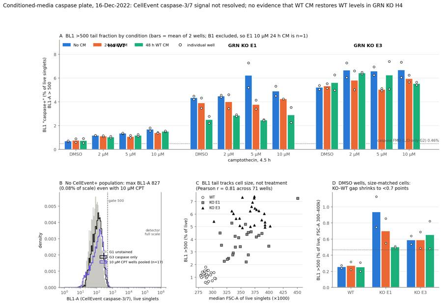
132
tool call · Bash
python - <<'EOF'
s=open('fig.py').read()
s=s.replace(""" a.text(pos-2.5,8.6,{'WT':'H4 WT','E1':'GRN KO E1','E3':'GRN KO E3'}[line],ha='center',fontsize=11,color=INK,weight='bold')""",
""" a.text(pos-2.5,-1.25,{'WT':'H4 WT','E1':'GRN KO E1','E3':'GRN KO E3'}[line],ha='center',va='top',fontsize=11,color=INK,weight='bold')""")
s=s.replace("""a.text(pos-.5,x.loc['G2','casp_pct_live']+.12,'caspase FMO (L/D-only G2) 0.46%',ha='right',va='bottom',fontsize=8.5,color=INK2)\n""","")
s=s.replace("""a.set_xlabel('camptothecin, 4.5 h')""","""a.set_xlabel('camptothecin, 4.5 h',labelpad=24)""")
s=s.replace("""+[Line2D([],[],marker='o',ls='',markerfacecolor='white',markeredgecolor=INK,label='well')]
a.legend(h,[CML[c] for c in cms]+['individual well']""","""+[Line2D([],[],marker='o',ls='',markerfacecolor='white',markeredgecolor=INK),Line2D([],[],color=INK2,ls=':',lw=1.2)]
a.legend(h,[CML[c] for c in cms]+['individual well','caspase FMO (L/D-only G2) 0.46%']""")
s=s.replace("ncol=4,frameon=False","ncol=5,frameon=False")
s=s.replace("""b.legend(frameon=False,fontsize=8,loc='upper right',bbox_to_anchor=(1,.42))""","""b.legend(frameon=False,fontsize=8,loc='upper right')""")
s=s.replace("""b.text(9e5,b.get_ylim()[1]*.55,'detector\\nfull scale'""","""b.text(9e5,b.get_ylim()[1]*.45,'detector\\nfull scale'""")
open('fig.py','w').write(s)
EOF
python fig.py >/dev/null133
tool output
(Bash completed with no output)
134
agent
Fixed label overlaps in the figure; checking the render.
135
tool call · Read
{
"file_path": "/task/outputs/figure.png"
}136
tool output
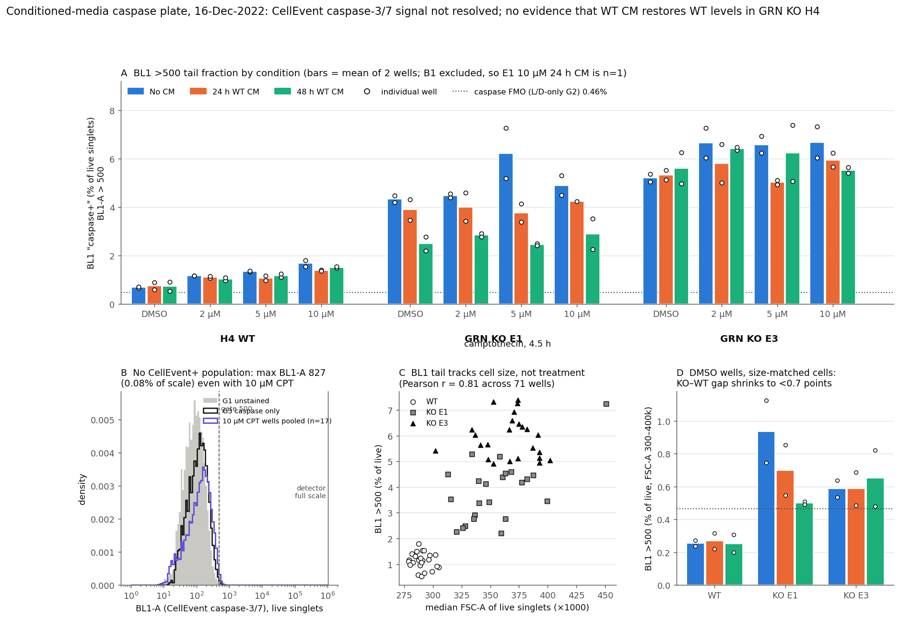
138
tool call · Bash
python - <<'EOF'
s=open('fig.py').read()
s=s.replace("""a.set_xlabel('camptothecin, 4.5 h',labelpad=24)""","")
s=s.replace("A BL1 >500 tail fraction by condition (","A BL1 >500 tail fraction by camptothecin dose (4.5 h) and conditioned medium (")
s=s.replace("""b.text(560,b.get_ylim()[1]*.9,'gate 500'""","""b.text(560,b.get_ylim()[1]*.62,'caspase_pos\\ngate 500'""")
open('fig.py','w').write(s)
EOF
python fig.py >/dev/null139
tool output
(Bash completed with no output)
140
tool call · Read
{
"file_path": "/task/outputs/figure.png"
}141
tool output
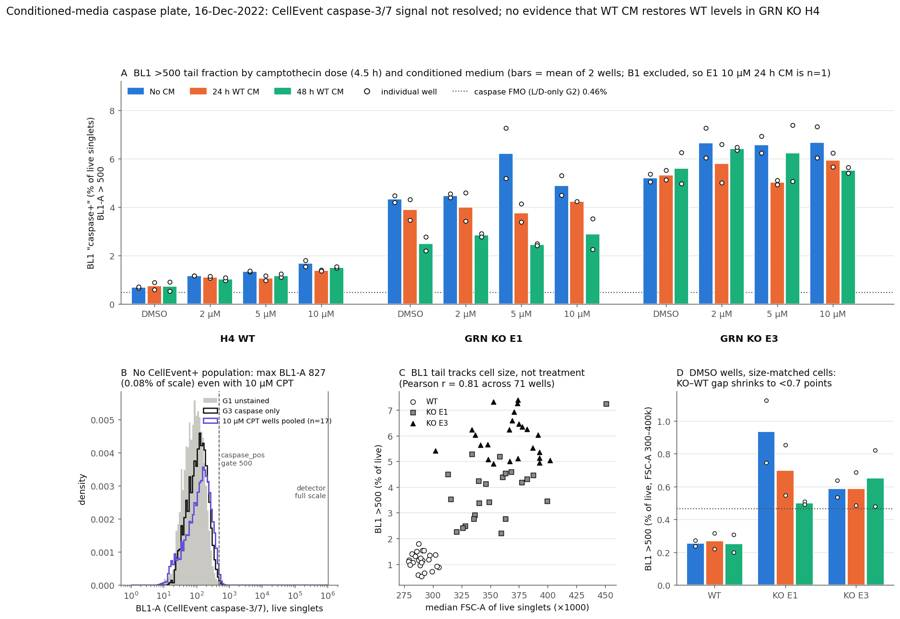
143
agent
Figure is clean. Now a small gating-overview image for the report, then the comparison numbers for answer.json.
144
tool call · Bash
cat > gatefig.py <<'EOF'
from load import *
import flowkit as fk
import matplotlib; matplotlib.use('Agg'); import matplotlib.pyplot as plt
from gate import CELL,SING,LIVE_MAX,CASP_MIN
EOF
sed -n '1,8p' gate.py > gconst.py
cat > gatefig.py <<'EOF'
from load import *
import flowkit as fk
import matplotlib; matplotlib.use('Agg'); import matplotlib.pyplot as plt
exec(open('gconst.py').read().split("U='uncompensated'")[0])
g=fk.parse_gating_xml('/task/outputs/gates.xml')
wells=['A12','B9','G2','B1']
fig,ax=plt.subplots(len(wells),4,figsize=(20,5*len(wells)))
for i,w in enumerate(wells):
s=fk.Sample('/task/inputs/raw/'+lay.set_index('well').loc[w,'file']); res=g.gate_sample(s); d=get(w)
mc=res.get_gate_membership('cells'); ms=res.get_gate_membership('singlets'); ml=res.get_gate_membership('live')
a=ax[i,0]; a.hist2d(d['FSC-A'],d['SSC-A'],bins=200,range=[[0,7.5e5],[0,8e5]],cmap='viridis',cmin=1,norm=matplotlib.colors.LogNorm())
P=np.array(CELL+[CELL[0]]); a.plot(P[:,0],P[:,1],'r-'); a.set_title(f"{w} {lay.set_index('well').loc[w,'sample']}: cells {100*mc.mean():.1f}%"); a.set_xlabel('FSC-A'); a.set_ylabel('SSC-A')
dc=d[mc]; a=ax[i,1]; a.hist2d(dc['FSC-A'],dc['FSC-H'],bins=200,range=[[0,7.5e5],[0,4.6e5]],cmap='viridis',cmin=1,norm=matplotlib.colors.LogNorm())
P=np.array(SING+[SING[0]]); a.plot(P[:,0],P[:,1],'r-'); a.set_title(f'singlets {100*ms.sum()/mc.sum():.1f}% of cells'); a.set_xlabel('FSC-A'); a.set_ylabel('FSC-H')
dsn=d[ms]; a=ax[i,2]; a.hist2d(dsn['FSC-A'],asinh(dsn['BL2-A'],200),bins=200,range=[[0,7.5e5],[-2,9]],cmap='viridis',cmin=1,norm=matplotlib.colors.LogNorm())
a.axhline(asinh(LIVE_MAX,200),color='r'); a.set_title(f'live (BL2-A<15000) {100*ml.sum()/ms.sum():.1f}% of singlets'); a.set_xlabel('FSC-A'); a.set_ylabel('asinh(BL2-A/200) SYTOX AAdvanced')
dl=d[ml]; a=ax[i,3]; a.hist2d(asinh(dl['BL1-A'],50),asinh(dl['BL2-A'],200),bins=200,range=[[-1,10],[-2,9]],cmap='viridis',cmin=1,norm=matplotlib.colors.LogNorm())
a.axvline(asinh(CASP_MIN,50),color='r'); a.set_title(f'caspase_pos (BL1-A>500) {100*(dl["BL1-A"]>500).mean():.2f}% of live'); a.set_xlabel('asinh(BL1-A/50) CellEvent'); a.set_ylabel('asinh(BL2-A/200)')
plt.tight_layout(); plt.savefig('/task/outputs/gating_overview.png',dpi=45)
EOF
python gatefig.py145
tool output
(Bash completed with no output)
146
tool call · Read
{
"file_path": "/task/outputs/gating_overview.png"
}147
tool output
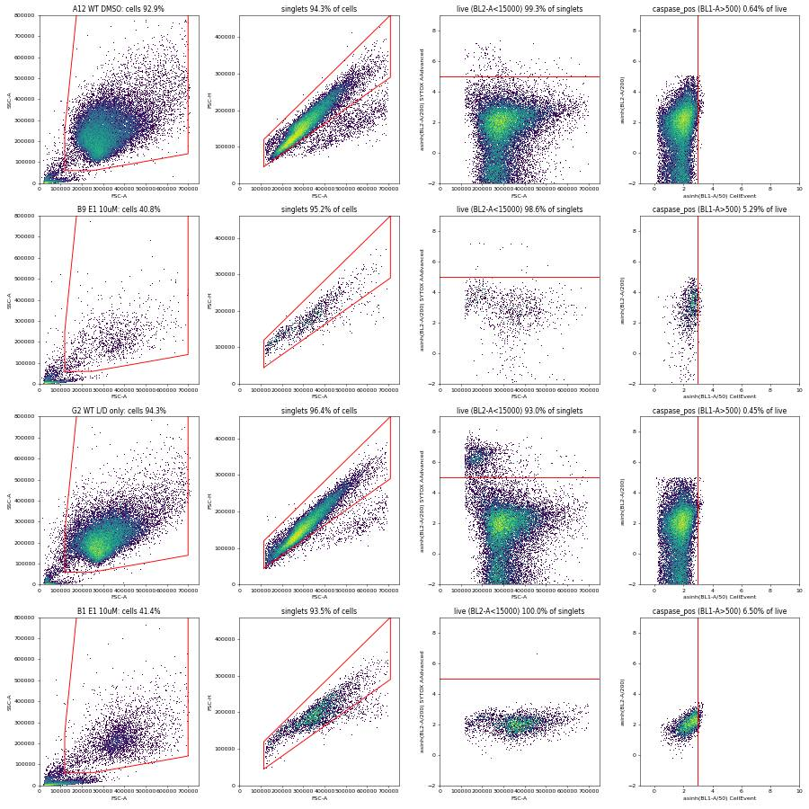
149
agent
Gating overview looks right (B1 clearly lacks SYTOX spread). Now computing comparison statistics and writing answer.json.
150
tool call · Bash
python - <<'EOF'
import pandas as pd, numpy as np
cs=pd.read_csv('/task/outputs/condition_summary.csv').set_index('condition')
x=pd.read_csv('well_metrics3.csv',index_col=0)
def cmp(a,b):
ma,mb=cs.loc[a,'mean'],cs.loc[b,'mean']
return f"{a} {ma:.2f}% vs {b} {mb:.2f}%: diff {ma-mb:+.2f} pct-points ({ma/mb:.2f}x)"
pairs=[('E1_DMSO_noCM','WT_DMSO_noCM'),('E3_DMSO_noCM','WT_DMSO_noCM'),('E1_DMSO_CM24h','E1_DMSO_noCM'),('E1_DMSO_CM48h','E1_DMSO_noCM'),
('E3_DMSO_CM24h','E3_DMSO_noCM'),('E3_DMSO_CM48h','E3_DMSO_noCM'),('E1_DMSO_CM48h','WT_DMSO_noCM'),('E3_DMSO_CM48h','WT_DMSO_noCM'),
('E1_10uM_CM48h','E1_10uM_noCM'),('E3_10uM_CM48h','E3_10uM_noCM'),('E1_10uM_CM48h','WT_10uM_noCM'),('WT_10uM_noCM','WT_DMSO_noCM'),('ctrl_WT_caspase_only','ctrl_WT_LD_only')]
for p in pairs: print(cmp(*p))
# pooled over doses: KO CM48 vs noCM
for line in ['E1','E3','WT']:
for cm in ['noCM','CM24h','CM48h']:
v=[cs.loc[f'{line}_{d}_{cm}','mean'] for d in ['DMSO','2uM','5uM','10uM']]
print(line,cm,np.round(v,2),round(np.mean(v),2))
sm=pd.read_csv('sizematch.csv'); print(sm[sm.dose=='DMSO'].groupby(['line','cm']).pct.mean().round(2))
EOF151
tool output
E1_DMSO_noCM 4.32% vs WT_DMSO_noCM 0.68%: diff +3.65 pct-points (6.38x)
E3_DMSO_noCM 5.19% vs WT_DMSO_noCM 0.68%: diff +4.52 pct-points (7.67x)
E1_DMSO_CM24h 3.88% vs E1_DMSO_noCM 4.32%: diff -0.44 pct-points (0.90x)
E1_DMSO_CM48h 2.48% vs E1_DMSO_noCM 4.32%: diff -1.84 pct-points (0.57x)
E3_DMSO_CM24h 5.32% vs E3_DMSO_noCM 5.19%: diff +0.13 pct-points (1.02x)
E3_DMSO_CM48h 5.60% vs E3_DMSO_noCM 5.19%: diff +0.41 pct-points (1.08x)
E1_DMSO_CM48h 2.48% vs WT_DMSO_noCM 0.68%: diff +1.81 pct-points (3.67x)
E3_DMSO_CM48h 5.60% vs WT_DMSO_noCM 0.68%: diff +4.92 pct-points (8.27x)
E1_10uM_CM48h 2.89% vs E1_10uM_noCM 4.89%: diff -2.00 pct-points (0.59x)
E3_10uM_CM48h 5.52% vs E3_10uM_noCM 6.67%: diff -1.15 pct-points (0.83x)
E1_10uM_CM48h 2.89% vs WT_10uM_noCM 1.67%: diff +1.22 pct-points (1.73x)
WT_10uM_noCM 1.67% vs WT_DMSO_noCM 0.68%: diff +0.99 pct-points (2.47x)
ctrl_WT_caspase_only 0.92% vs ctrl_WT_LD_only 0.46%: diff +0.46 pct-points (1.99x)
E1 noCM [4.32 4.46 6.22 4.89] 4.97
E1 CM24h [3.88 4. 3.76 4.23] 3.97
E1 CM48h [2.48 2.83 2.45 2.89] 2.66
E3 noCM [5.19 6.64 6.57 6.67] 6.27
E3 CM24h [5.32 5.8 5.01 5.94] 5.52
E3 CM48h [5.6 6.41 6.23 5.52] 5.94
WT noCM [0.68 1.16 1.34 1.67] 1.21
WT CM24h [0.74 1.11 1.06 1.37] 1.07
WT CM48h [0.72 1.02 1.17 1.51] 1.11
line cm
E1 24hr 0.70
48hr 0.50
No c 0.93
E3 24hr 0.59
48hr 0.65
No c 0.59
WT 24hr 0.27
48hr 0.25
No c 0.25
Name: pct, dtype: float64153
tool call · Bash
python - <<'EOF'
import pandas as pd, numpy as np
x=pd.read_csv('well_metrics3.csv',index_col=0)
x=x[x.index.str[0].isin(list('ABCDEF'))]
t=x.groupby(['line','cm','dose']).live_n.mean().unstack()
r=t.div(t['DMSO'],axis=0)*100
print(t.round(0)); print(r.round(0))
print(x.groupby(['line','cm','dose']).dead_pct_sing.mean().unstack().round(2))
print(x.groupby(['line']).cells_pct_all.describe().round(1))
EOF154
tool output
dose 10uM 2uM 5uM DMSO
line cm
E1 CM24h 3208.0 5326.0 4624.0 8950.0
CM48h 1810.0 5418.0 4111.0 7141.0
noCM 1272.0 4652.0 3060.0 8204.0
E3 CM24h 2919.0 5108.0 5516.0 6936.0
CM48h 1232.0 4746.0 3206.0 6645.0
noCM 1438.0 5570.0 4242.0 9337.0
WT CM24h 16070.0 17824.0 17947.0 26326.0
CM48h 6468.0 14695.0 13087.0 23370.0
noCM 7890.0 21348.0 14326.0 24797.0
dose 10uM 2uM 5uM DMSO
line cm
E1 CM24h 36.0 60.0 52.0 100.0
CM48h 25.0 76.0 58.0 100.0
noCM 16.0 57.0 37.0 100.0
E3 CM24h 42.0 74.0 80.0 100.0
CM48h 19.0 71.0 48.0 100.0
noCM 15.0 60.0 45.0 100.0
WT CM24h 61.0 68.0 68.0 100.0
CM48h 28.0 63.0 56.0 100.0
noCM 32.0 86.0 58.0 100.0
dose 10uM 2uM 5uM DMSO
line cm
E1 CM24h 0.05 0.16 0.20 0.33
CM48h 0.66 0.32 0.43 0.68
noCM 0.86 0.20 0.30 0.37
E3 CM24h 0.23 0.46 0.36 1.10
CM48h 0.71 0.52 0.74 0.90
noCM 0.50 0.30 0.69 0.51
WT CM24h 0.71 0.76 0.71 0.83
CM48h 1.41 0.92 0.74 0.92
noCM 0.61 0.43 0.60 0.62
count mean std min 25% 50% 75% max
line
E1 24.0 51.8 18.5 27.5 40.9 44.3 60.1 84.7
E3 24.0 56.2 12.4 32.2 50.1 55.7 60.4 79.4
WT 24.0 71.9 12.8 56.9 64.4 67.5 75.8 93.9156
agent
Writing answer.json and report.md now.
157
tool call · Bash
cat > answer.py <<'EOF'
import json, pandas as pd
cs=pd.read_csv('/task/outputs/condition_summary.csv').set_index('condition')
def mag(a,b,extra=''):
ma,mb=cs.loc[a,'mean'],cs.loc[b,'mean']
return f"{ma:.2f}% vs {mb:.2f}% of live singlets BL1-A>500: {ma-mb:+.2f} percentage points ({ma/mb:.2f}x){extra}"
C=[]
def add(a,b,d,conf,extra=''): C.append(dict(comparison=f"{a} vs {b}",a=a,b=b,direction=d,magnitude=mag(a,b,extra),confidence=conf))
add('E1_DMSO_noCM','WT_DMSO_noCM','increase','medium','; seen in both wells and at every dose, but mostly a cell-size effect: in size-matched cells (FSC-A 300-400k) the values are 0.93% vs 0.25%')
add('E3_DMSO_noCM','WT_DMSO_noCM','increase','medium','; size-matched 0.59% vs 0.25%')
add('E1_DMSO_CM24h','E1_DMSO_noCM','no_clear_change','low','; n=2 wells per arm')
add('E1_DMSO_CM48h','E1_DMSO_noCM','decrease','low','; n=2; CM48h E1 cells were also smaller (median FSC-A 359-363k vs 377-387k), size-matched 0.50% vs 0.93%')
add('E3_DMSO_CM24h','E3_DMSO_noCM','no_clear_change','low','; n=2')
add('E3_DMSO_CM48h','E3_DMSO_noCM','no_clear_change','low','; n=2')
add('E1_DMSO_CM48h','WT_DMSO_noCM','increase','medium','; still 3.7x WT, so not restored to WT')
add('E3_DMSO_CM48h','WT_DMSO_noCM','increase','medium','; still 8.3x WT, so not restored to WT')
add('E1_10uM_CM48h','E1_10uM_noCM','decrease','low','; n=2; same direction as DMSO, size-confounded')
add('E3_10uM_CM48h','E3_10uM_noCM','no_clear_change','low','; n=2; SD 0.16 and 0.91, so the arms overlap')
add('WT_10uM_noCM','WT_DMSO_noCM','increase','medium','; the camptothecin assay window is under 1 percentage point and no discrete CellEvent+ population appears')
add('ctrl_WT_caspase_only','ctrl_WT_LD_only','no_clear_change','high','; CellEvent reagent alone moves the median BL1-A from 143 to 170 and adds no positive population (max 753 vs 733)')
ans={
"question":"Can progranulin conditioned media (24 h or 48 h WT H4 CM) restore wild-type levels of caspase-3/7 activity in H4 GRN KO cells (clones E1 and E3), at baseline (DMSO) and after camptothecin challenge (2/5/10 uM, 4.5 h)?",
"comparisons":C,
"overall_answer":"no: this plate gives no evidence that WT conditioned media restores WT caspase activity in GRN KO H4 cells. More basically, the CellEvent caspase-3/7 readout did not resolve any caspase-positive population in any well. All BL1-A events are below about 830 on a 1,048,576 scale, even at 10 uM camptothecin, so caspase activity was not actually measured. The only proxy available is the BL1-A>500 tail (% of live singlets). On that proxy both KO clones stay far above WT with either CM: E1 with 48 h CM 2.48% and E3 with 48 h CM 5.60%, vs WT 0.68% (DMSO). E3 does not change with CM. E1 falls about 40% with 48 h CM, but that drop goes with smaller cells. The proxy itself mostly tracks cell size (r=0.81 with median FSC-A across 71 wells).",
"assay_verdict":"needs_optimisation",
"next_action":"optimise_reagent_or_setting",
"next_change":{
"what":"Set-up of the CellEvent caspase-3/7 readout: BL1 detector voltage plus an on-plate induced-apoptosis positive control",
"from":"BL1 at 225 V (instrument template still labelled 'AAV-GFP'). The only caspase control was G3, untreated WT with CellEvent only, which looked the same as unstained G1. No induced positive or caspase-inhibitor control.",
"to":"Raise BL1 to about 350-400 V, so unstained H4 cells sit clearly above the electronic noise floor (about 10^3) with headroom to 10^6. Add a WT CellEvent-only well treated with staurosporine 1 uM for 4 h (or camptothecin 10 uM overnight), plus the same well with Z-VAD-FMK. Re-run the conditioned-media plate only after a discrete, Z-VAD-sensitive CellEvent+ population is seen.",
"why":"At 225 V every BL1 event in all 78 wells is below 830 (0.08% of full scale). The BL1 distribution is unimodal and close to the noise floor: unstained G1 median 134, caspase-only G3 median 170, and 10 uM camptothecin wells have no bright subset. So 'caspase+' cannot be separated from autofluorescence or cell size, and with no positive control we cannot tell a detector or reagent failure from absent caspase activation. The SYTOX AAdvanced (BL2) half of the assay works: G2 dead cells sit at about 1e5, well clear of live cells."},
"excluded_wells":["B1"],
"caveats":[
"No discrete CellEvent+ (BL1) population in any well, including 10 uM camptothecin and the caspase-only control G3. The caspase_pos gate (BL1-A>500, about the 99.5th percentile of the L/D-only FMO G2) therefore measures the upper tail of one unimodal, noise-dominated distribution, not caspase-active cells.",
"The BL1>500 proxy correlates with median FSC-A (r=0.81 across 71 wells), and KO cells are larger than WT (median FSC-A about 360-400k vs about 290k). In size-matched cells (FSC-A 300-400k, DMSO wells) the KO-WT gap falls from about 4 to under 0.7 percentage points.",
"Only 2 wells per condition (rows A-C vs D-F on the same plate, same day), so these are technical replicates, not independent experiments. No inferential statistics were attempted.",
"B1 (E1, 10 uM camptothecin, 24 h CM) lacked SYTOX AAdvanced and was excluded, so that condition is n=1 (E1 well).",
"Six KO 10 uM camptothecin wells (B9, C5, E5, E9, F5, F9) had only 1135-1461 live singlets, from camptothecin-induced cell loss in the fixed ~140 uL acquisition. Their percentages carry about 0.4-0.8 percentage points binomial SE.",
"SYTOX AAdvanced was read in BL2 (on the Attune, BL3 at 695 nm is its usual detector). Dead cells still separated clearly (G2 dead peak about 1e5), but SYTOX+ events were at most 2.1% of singlets in plate wells. Most camptothecin damage appeared as debris (FSC-A<100k up to 58% of events) and cell loss, not as SYTOX+ singlets.",
"The file spillover matrix is identity and no compensation was applied. Spillover could not be estimated because the CellEvent single-stain control (G3) has no positive population.",
"Channel labels in the FCS files are stale (B
… [499 more characters not shown]158
tool output
12 no: this plate gives no evidence that WT conditioned media restores WT caspase a
160
tool call · Bash
python - <<'EOF'
import pandas as pd
cs=pd.read_csv('/task/outputs/condition_summary.csv').set_index('condition')
rows=[]
for line in ['WT','E1','E3']:
for d in ['DMSO','2uM','5uM','10uM']:
r=[f'{line}',d.replace('uM',' µM')]
for cm in ['noCM','CM24h','CM48h']:
c=cs.loc[f'{line}_{d}_{cm}']
r.append(f"{c['mean']:.2f} ± {c['sd']:.2f}" if c['n_wells_used']>1 else f"{c['mean']:.2f} (n=1)")
rows.append('| '+' | '.join(r)+' |')
open('tbl.md','w').write('\n'.join(rows))
print('\n'.join(rows))
EOF161
tool output
| WT | DMSO | 0.68 ± 0.04 | 0.74 ± 0.21 | 0.72 ± 0.27 | | WT | 2 µM | 1.16 ± 0.01 | 1.11 ± 0.06 | 1.02 ± 0.07 | | WT | 5 µM | 1.34 ± 0.04 | 1.05 ± 0.14 | 1.17 ± 0.09 | | WT | 10 µM | 1.67 ± 0.19 | 1.37 ± 0.03 | 1.51 ± 0.03 | | E1 | DMSO | 4.32 ± 0.20 | 3.88 ± 0.60 | 2.48 ± 0.41 | | E1 | 2 µM | 4.46 ± 0.10 | 4.00 ± 0.83 | 2.83 ± 0.10 | | E1 | 5 µM | 6.22 ± 1.46 | 3.75 ± 0.52 | 2.45 ± 0.05 | | E1 | 10 µM | 4.89 ± 0.56 | 4.23 (n=1) | 2.89 ± 0.89 | | E3 | DMSO | 5.19 ± 0.23 | 5.32 ± 0.28 | 5.60 ± 0.92 | | E3 | 2 µM | 6.64 ± 0.87 | 5.80 ± 1.12 | 6.41 ± 0.08 | | E3 | 5 µM | 6.57 ± 0.49 | 5.01 ± 0.14 | 6.23 ± 1.64 | | E3 | 10 µM | 6.67 ± 0.91 | 5.94 ± 0.41 | 5.52 ± 0.16 |
162
tool call · Bash
python - <<'EOF'
tbl=open('tbl.md').read()
rep=f"""# Conditioned-media caspase plate (Attune NxT, 16-Dec-2022): analysis report
## Question
Can progranulin-containing conditioned media (CM) from WT H4 cells, collected after 24 h or 48 h, bring caspase-3/7 activity in H4 GRN KO cells (clones E1, E3) back down to WT levels? The comparison is made at baseline (DMSO) and after camptothecin (CPT 2, 5 or 10 µM for 4.5 h). The readout is CellEvent Caspase-3/7 Green in live (SYTOX AAdvanced-negative) cells.
## Methods
- **Data.** 78 FCS 3.1 files (A1–F12, G1–G6), with one well per file.
- Each well was acquired for a fixed ~16.5 s at 500 µL/min (133–142 µL per well), with an FSC threshold of 25,000.
- Total events per well ranged from 3,151 to 38,748.
- **Plate design.** I checked the layout against the plan.
- Columns 1–4 received 24 h CM (blue), 5–8 received 48 h CM (green) and 9–12 no CM.
- Rows A–C are WT, E1 and E3, and rows D–F repeat them. That gives n = 2 wells per line × dose × CM condition.
- Row G holds the controls: G1 unstained, G2 L/D (SYTOX) only and G3 CellEvent only, all WT. G4, G5 and G6 are E1, E3 and WT "untreated" (medium not stated).
- **Channels.** The $PnS labels are stale (BL1 = "AAV-GFP-GFP"), so I followed the plan's reagent list and cytometer settings.
- **BL1-A (530/30, 225 V) = CellEvent caspase-3/7 Green.**
- **BL2-A (350 V) = SYTOX AAdvanced.**
- The controls confirm this: only G2 (L/D only) has a bright BL2 population, peaking near 1e5.
- **Compensation.** None ("uncompensated"). The file's spillover matrix is the identity. CellEvent showed no positive events, so there was no spillover to estimate.
- **Gating** (FlowKit 1.2.3; one strategy applied unchanged to every file; saved as `gates.xml`; linear axes):
1. `cells`: a polygon on FSC-A × SSC-A. It removes debris (FSC-A < ~120k, or SSC-A < 60–140k along a sloped lower edge) and FSC-A ≥ 700k, which is the FSC-A saturation edge at ~705k (≤1.2% of events in any well). The shrunken, higher-SSC events typical of apoptosis are kept.
2. `singlets`: a polygon on FSC-A × FSC-H that keeps the diagonal (H/A ≳ 0.42) and drops doublets.
3. `live`: BL2-A < 15,000 (SYTOX-negative). The threshold sits in the valley between the live peak (~1e3) and the dead peak (~1e5) of control G2. `dead` is the complement (BL2-A ≥ 15,000; role "other").
4. `caspase_pos`: BL1-A > 500 within `live`. 500 is about the 99.5th percentile of the caspase-FMO control G2 (L/D only; live-singlet 99.5th percentile = 494). There was no discrete positive population to set it on, so this is an FMO-tail gate.
- **Primary metric.** `caspase_pos` / `live` × 100, i.e. % of live singlets with BL1-A > 500. No normalisation. Means and SDs are taken across wells (n = 2, technical replicates on one plate). The comparisons are descriptive; no inferential statistics were run.
- **QC.**
- **Event rate over time:** 1 s bins showed no clogs or air gaps. The only low bins were a late start (E10 began at 0.54 s) or a partial final second.
- **Saturation:** SSC-A at full scale in ≤0.07% of events; FSC-A at the saturation edge in ≤1.2%.
- **Staining:** the per-well BL2 profile was compared with the unstained control.
- **Event counts** were also checked.
- **Supporting analyses** (not used for gating):
- per-well medians of FSC-A and BL1-A in live cells;
- the BL1-A > 500 fraction recomputed in size-matched cells (live, FSC-A 300–400k);
- live-singlet yield per well relative to the matching DMSO well, as an exploratory cytotoxicity readout.
- **Other outputs.** `gating_overview.png` shows the gates on example wells.
## Results
**1. QC and flags.**
- **B1 excluded** (E1, 10 µM CPT, 24 h CM). The well never received SYTOX AAdvanced.
- Only 0.08% of its singlets have BL2-A > 3,000, against 8.8–33.6% in the other 17 E1 + CPT wells.
- Its BL2 profile is tight and tracks FSC, like unstained G1 (0.04%) and caspase-only G3 (0.01%).
- Its scatter matches E1 + CPT, so this is not a sample swap. Without the stain the live gate cannot be applied.
- **G3 flagged as bad_control (kept).** The CellEvent-only control is untreated WT and shows no positive population: live-singlet BL1-A median 170, 99.5th percentile 537, max 753. The L/D-only control G2 gives 143 / 494 / 733.
- **Six low-count wells kept with a note.** B9, C5, E5, E9, F5 and F9 have 1,135–1,461 live singlets. These are KO + 10 µM CPT wells, and the low counts reflect cell loss, not a fluidics fault.
- No clogs, ran-dry wells or meaningful saturation. Every other well: none / keep.
**2. The caspase readout has no positive population (Figure, panel B).**
- In all 78 wells BL1-A never exceeds ~830, which is 0.08% of the 1,048,576 scale. The distribution is a single peak near the noise floor:
- median ~134 in unstained cells and ~170–300 in stained cells;
- G1 unstained and G3 CellEvent-only largely overlap.
- 10 µM CPT, which caused heavy debris and cell loss (up to 58% of events at FSC-A < 100k; 15–32% live-cell recovery vs DMSO), produced no bright CellEvent+ subset.
- SYTOX worked: G2 has 7.0% dead singlets at ~1e5. In plate wells, SYTOX+ singlets were ≤2.1%.
**3. BL1-A > 500 tail fraction, % of live singlets, mean ± SD of 2 wells (Figure, panel A).**
| line | CPT | no CM | 24 h CM | 48 h CM |
|---|---|---|---|---|
{tbl}
Single-well references: WT, E1 and E3 untreated (G6, G4, G5) = 1.03, 4.18 and 6.00%. Controls: G1 0.43%, G2 0.46%, G3 0.92%.
- **KO vs WT.** Both KO clones read 6–8× above WT at baseline: E1 4.32% and E3 5.19% vs WT 0.68%.
- **CPT.** It raises the WT tail by less than 1 percentage point (0.68 → 1.67% at 10 µM).
- **CM in E3.** No effect. E3 sits at 5.0–6.7% under every CM condition.
- **CM in E1.** 48 h CM lowers the tail by about 40%, both at DMSO (4.32 → 2.48%) and averaged over all doses (4.97 → 2.66%). 24 h CM gives a smaller drop (≈ −20%).
- **Versus WT.** No KO condition reaches WT levels. The closest, E1 + 48 h CM at 2.48%, is still 3.7× WT.
**4.
… [4,087 more characters not shown]163
tool output
130
165
agent
Report written. Now running a consistency check across all deliverables (gates reload and reproduce counts, schema, exclusions).
166
tool call · Bash
cat > check.py <<'EOF'
import flowkit as fk, pandas as pd, json, numpy as np
O='/task/outputs/'
lay=pd.read_csv('/task/inputs/plate_layout.csv')
g=fk.parse_gating_xml(O+'gates.xml')
c=pd.read_csv(O+'counts.csv',keep_default_na=False)
assert list(c.columns)==['file','well','population','role','parent','count','pct_of_parent']
assert set(c.file)==set(lay.file) and len(c)==78*6
gate_ids={x[0] for x in g.get_gate_ids()}
pops=set(c.population)-{'all_events'}; assert pops==gate_ids,(pops,gate_ids)
for role in ['cells','singlets','live','marker_positive']:
assert c[c.role==role].population.nunique()==1 and (c.role==role).sum()==78
# parent check vs gate hierarchy
for p in pops:
path=g.get_gate(p).gate_name;
gp=[x for x in g.get_gate_ids() if x[0]==p][0][1]
par=gp[-1] if gp[-1]!='root' else 'all_events'
assert (c[c.population==p].parent==par).all(),p
# recount 10 random files
for f in lay.file.sample(10,random_state=1):
r=g.gate_sample(fk.Sample('/task/inputs/raw/'+f))
sub=c[c.file==f].set_index('population')
for p in pops: assert int(sub.loc[p,'count'])==r.get_gate_count(p),(f,p)
for p in pops:
par=sub.loc[p,'parent']; exp=100*int(sub.loc[p,'count'])/int(sub.loc[par,'count'])
assert abs(float(sub.loc[p,'pct_of_parent'])-exp)<1e-3
assert sub.loc['all_events','pct_of_parent']=='' and sub.loc['all_events','parent']=='none'
fl=pd.read_csv(O+'flags.csv',keep_default_na=False)
assert list(fl.columns)==['file','well','issue_type','evidence','decision'] and len(fl)==78 and set(fl.file)==set(lay.file)
assert fl.issue_type.isin(['none','clog','ran_dry','too_few_events','saturation','bad_control','mislabel','other']).all()
assert fl.decision.isin(['keep','keep_with_note','exclude']).all()
assert ((fl.issue_type=='none')|(fl.evidence.str.contains(r'\d'))).all()
excl=set(fl[fl.decision=='exclude'].well)
a=json.load(open(O+'answer.json'))
assert set(a['excluded_wells'])==excl
cs=pd.read_csv(O+'condition_summary.csv',keep_default_na=False)
assert list(cs.columns)==['condition','wells','n_wells_used','mean','sd','metric_definition','normalisation_applied']
assert cs.condition.is_unique and not cs.condition.str.contains(',').any()
w=c.pivot(index='well',columns='population',values='count').astype(int)
for r in cs.itertuples():
ws=r.wells.split(';'); assert len(ws)==r.n_wells_used and not (set(ws)&excl)
v=100*w.loc[ws,'caspase_pos']/w.loc[ws,'live']
assert abs(v.mean()-float(r.mean))<1e-3
if len(ws)>1: assert abs(v.std(ddof=1)-float(r.sd))<1e-3
else: assert r.sd==''
for cmpx in a['comparisons']:
assert cmpx['a'] in set(cs.condition) and cmpx['b'] in set(cs.condition)
assert cmpx['direction'] in ['increase','decrease','no_clear_change'] and cmpx['confidence'] in ['high','medium','low']
ma,mb=cs.set_index('condition').loc[[cmpx['a'],cmpx['b']],'mean'].astype(float)
if cmpx['direction']=='increase': assert ma>mb
if cmpx['direction']=='decrease': assert ma<mb
assert a['overall_answer'].split(':')[0] in ['yes','partial','no']
assert a['assay_verdict'] in ['fit_for_purpose','needs_optimisation','not_fit_for_purpose']
assert a['next_action'] in ['proceed_as_planned','repeat_unchanged','repeat_with_change','optimise_reagent_or_setting','change_treatment_or_timing','switch_assay','stop']
assert set(a['next_change'])=={'what','from','to','why'}
rep=open(O+'report.md').read()
hs=['## Question','## Methods','## Results','## Conclusion','## Caveats','## Recommendation']
idx=[rep.index(h) for h in hs]; assert idx==sorted(idx)
print('ALL CHECKS PASSED'); print(fl.issue_type.value_counts().to_dict(), fl.decision.value_counts().to_dict())
EOF
python check.py; ls -la /task/outputs167
tool output
ALL CHECKS PASSED
{'none': 70, 'too_few_events': 6, 'other': 1, 'bad_control': 1} {'keep': 70, 'keep_with_note': 7, 'exclude': 1}
total 552
drwxr-xr-x 2 root root 4096 Nov 10 17:22 .
drwxr-xr-x 5 root root 4096 Nov 10 17:08 ..
-rw-r--r-- 1 root root 8176 Nov 10 17:21 answer.json
-rw-r--r-- 1 root root 10175 Nov 10 17:18 condition_summary.csv
-rw-r--r-- 1 root root 38473 Nov 10 17:16 counts.csv
-rw-r--r-- 1 root root 226311 Nov 10 17:19 figure.png
-rw-r--r-- 1 root root 7038 Nov 10 17:18 flags.csv
-rw-r--r-- 1 root root 3396 Nov 10 17:16 gates.xml
-rw-r--r-- 1 root root 238107 Nov 10 17:20 gating_overview.png
-rw-r--r-- 1 root root 10760 Nov 10 17:22 report.md169
agent
All seven deliverables are in `/task/outputs/`, plus an extra `gating_overview.png`. A check script confirmed that `gates.xml` reloads, re-gating 10 sampled files reproduces their rows in `counts.csv` exactly, and the formats and exclusions are consistent across files.
**Main result:** the plate cannot really answer the question, because the caspase stain never showed a positive population.
- **No caspase-positive cells anywhere.** BL1 is the caspase channel (its stored label, "AAV-GFP", is out of date). Across all 78 wells no event goes above about 830 on a 1,048,576 scale, even at 10 µM camptothecin. The caspase-only control (G3) looks almost the same as the unstained well (G1). So caspase activity was not actually measured.
- **The fallback number mostly reflects cell size.** I gated "caspase+" as BL1 > 500, the top ~0.5% of the dead-stain-only control G2. The result is about 4–6% in the knockout lines vs about 0.7% in WT. But it rises and falls with cell size across wells (r = 0.81), and the knockout cells are larger. Comparing only cells of the same size, the gap shrinks to under 0.7 points.
- **Conditioned media did not restore WT levels.** E3 did not change (5.2–5.6% at DMSO). E1 dropped about 40% with 48 h media (4.32% → 2.48%), but its cells were also smaller, and it stayed 3.7× above WT.
- **The dead-cell stain (SYTOX) worked.** Dead cells in G2 sit around 1e5, well apart from live cells.
**Answer and verdict:** `overall_answer` is "no", `assay_verdict` is `needs_optimisation` and `next_action` is `optimise_reagent_or_setting`. The recommended change:
- Raise the BL1 voltage from 225 to about 350–400 V.
- Add a positive-control well (staurosporine or overnight camptothecin), with and without the caspase inhibitor Z-VAD.
- Re-run the conditioned-media plate only once a distinct caspase-positive population shows up.
At the current voltage, a broken setting, a failed reagent and no caspase activation at 4.5 h look the same, and this plate has no induced-apoptosis control to tell them apart.
**Flagged wells:**
- **B1 excluded:** it never got the dead-cell stain (0.08% of singlets above 3,000 vs 8.8–33.6% in the other 17 E1 + camptothecin wells). That leaves E1 10 µM with 24 h media as a single well.
- **G3 kept with a note (bad control):** the caspase-only control shows no positive cells.
- **Six wells kept with a note (too few events):** B9, C5, E5, E9, F5 and F9 have 1,135–1,461 live cells, because camptothecin killed many cells, not because of an instrument fault.
- **Everything else is clean:** no clogs, wells running dry or meaningful saturation.
As a side observation, 24 h conditioned media went with more surviving cells after 10 µM camptothecin in all three lines, WT included. This is based on two wells per condition with no seeding control, so I've treated it as exploratory only in the report.
Files are in `/task/outputs/`:
- `gates.xml`
- `counts.csv`
- `flags.csv`
- `condition_summary.csv`
- `figure.png`
- `report.md`
- `answer.json`
- `gating_overview.png`
final result
All seven deliverables are in `/task/outputs/`, plus an extra `gating_overview.png`. A check script confirmed that `gates.xml` reloads, re-gating 10 sampled files reproduces their rows in `counts.csv` exactly, and the formats and exclusions are consistent across files. **Main result:** the plate cannot really answer the question, because the caspase stain never showed a positive population. - **No caspase-positive cells anywhere.** BL1 is the caspase channel (its stored label, "AAV-GFP", is out of date). Across all 78 wells no event goes above about 830 on a 1,048,576 scale, even at 10 µM camptothecin. The caspase-only control (G3) looks almost the same as the unstained well (G1). So caspase activity was not actually measured. - **The fallback number mostly reflects cell size.** I gated "caspase+" as BL1 > 500, the top ~0.5% of the dead-stain-only control G2. The result is about 4–6% in the knockout lines vs about 0.7% in WT. But it rises and falls with cell size across wells (r = 0.81), and the knockout cells are larger. Comparing only cells of the same size, the gap shrinks to under 0.7 points. - **Conditioned media did not restore WT levels.** E3 did not change (5.2–5.6% at DMSO). E1 dropped about 40% with 48 h media (4.32% → 2.48%), but its cells were also smaller, and it stayed 3.7× above WT. - **The dead-cell stain (SYTOX) worked.** Dead cells in G2 sit around 1e5, well apart from live cells. **Answer and verdict:** `overall_answer` is "no", `assay_verdict` is `needs_optimisation` and `next_action` is `optimise_reagent_or_setting`. The recommended change: - Raise the BL1 voltage from 225 to about 350–400 V. - Add a positive-control well (staurosporine or overnight camptothecin), with and without the caspase inhibitor Z-VAD. - Re-run the conditioned-media plate only once a distinct caspase-positive population shows up. At the current voltage, a broken setting, a failed reagent and no caspase activation at 4.5 h look the same, and this plate has no induced-apoptosis control to tell them apart. **Flagged wells:** - **B1 excluded:** it never got the dead-cell stain (0.08% of singlets above 3,000 vs 8.8–33.6% in the other 17 E1 + camptothecin wells). That leaves E1 10 µM with 24 h media as a single well. - **G3 kept with a note (bad control):** the caspase-only control shows no positive cells. - **Six wells kept with a note (too few events):** B9, C5, E5, E9, F5 and F9 have 1,135–1,461 live cells, because camptothecin killed many cells, not because of an instrument fault. - **Everything else is clean:** no clogs, wells running dry or meaningful saturation. As a side observation, 24 h conditioned media went with more surviving cells after 10 µM camptothecin in all three lines, WT included. This is based on two wells per condition with no seeding control, so I've treated it as exploratory only in the report. Files are in `/task/outputs/`: - `gates.xml` - `counts.csv` - `flags.csv` - `condition_summary.csv` - `figure.png` - `report.md` - `answer.json` - `gating_overview.png`